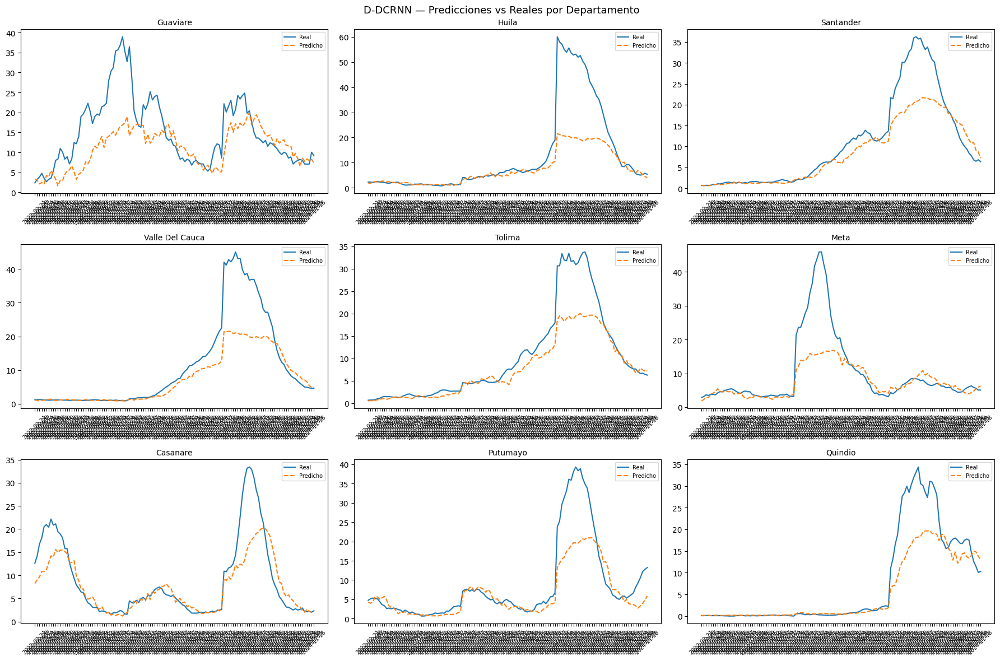
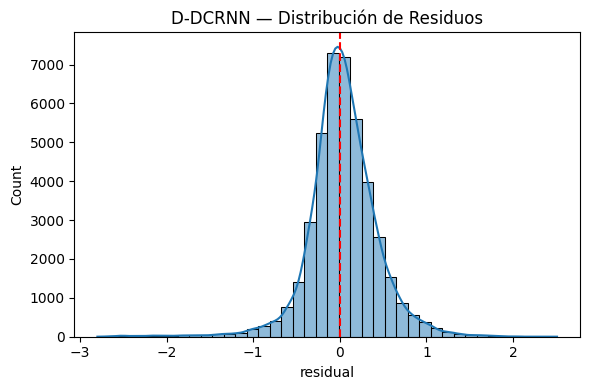
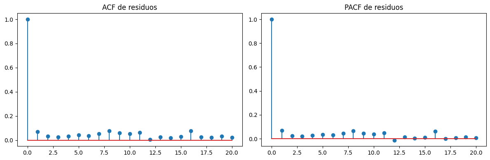
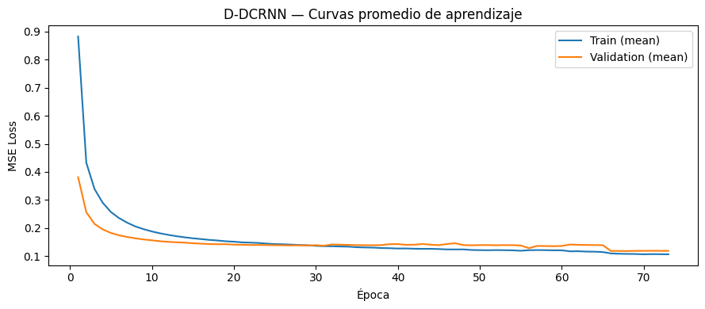
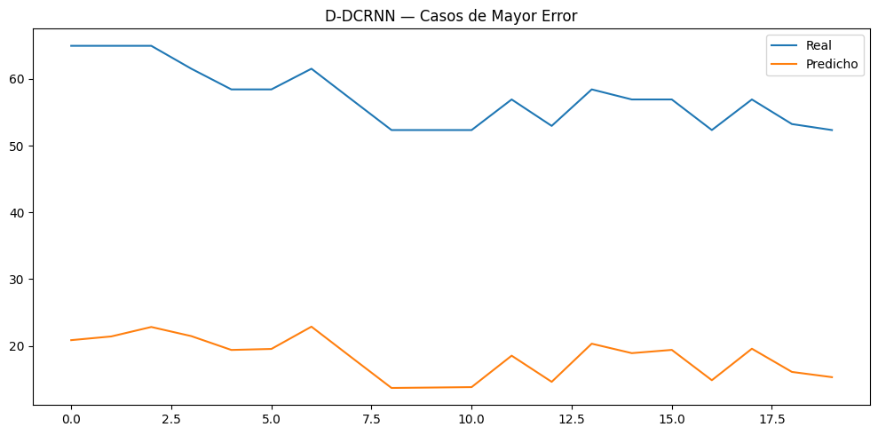
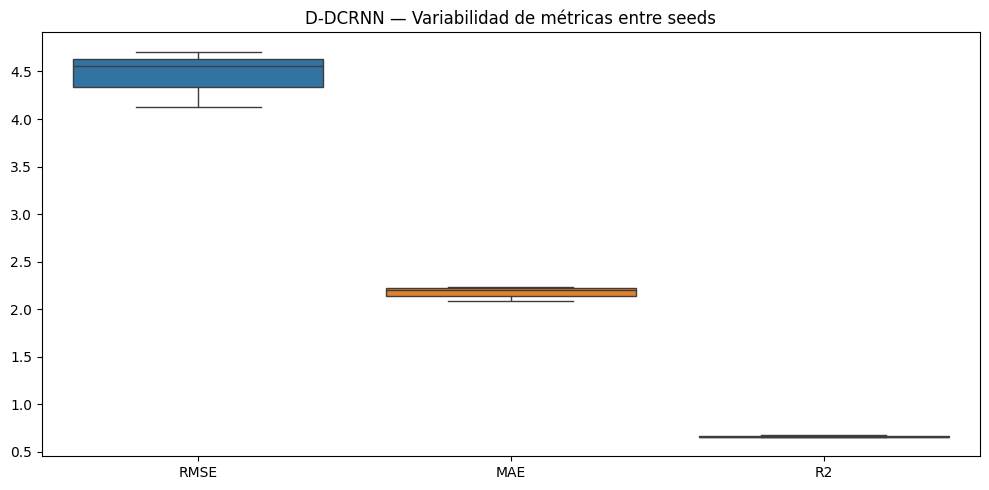

11. Modelo Final: D-DCRNN (Dynamic Diffusion Convolutional RNN)#
Extensión del DCRNN baseline con:
Grafo dinámico aprendido por atención (no estático)
Multi-layer DCRNN con residual connections
Predicciones por departamento con intervalos de confianza
Métricas por departamento (RMSE, MAE, R²)
Misma estructura de pipeline que el DCRNN baseline
11.1. Librerías#
Se importan las librerías requeridas para la implementación del modelo final, incluyendo aquellas necesarias para el procesamiento de datos, el entrenamiento del modelo, la evaluación de desempeño y la visualización de resultados.
import os
import copy
import random
import optuna
import numpy as np
import pandas as pd
from sklearn.preprocessing import RobustScaler
from sklearn.metrics import (
mean_squared_error,
mean_absolute_error,
r2_score
)
import torch
import torch.nn as nn
import torch.nn.functional as F
from torch.utils.data import (
Dataset,
DataLoader
)
import geopandas as gpd
from libpysal.weights import Queen
import sys
import time
import scipy.stats as st
import matplotlib.pyplot as plt
import seaborn as sns
from statsmodels.stats.diagnostic import acorr_ljungbox
from statsmodels.tsa.stattools import acf, pacf
11.2. Configuración Reproducibilidad#
SEEDS = [42, 123, 2024]
DEVICE = torch.device(
"cuda" if torch.cuda.is_available()
else "cpu"
)
print("DEVICE:", DEVICE)
if torch.cuda.is_available():
print("GPU:", torch.cuda.get_device_name(0))
print("Python:", sys.version)
print("Torch:", torch.__version__)
print("Numpy:", np.__version__)
print("Pandas:", pd.__version__)
DEVICE: cuda
GPU: NVIDIA GeForce RTX 5050 Laptop GPU
Python: 3.10.20 (main, Mar 3 2026, 09:24:47) [GCC 13.3.0]
Torch: 2.11.0+cu130
Numpy: 2.2.6
Pandas: 2.3.3
Se verifica la configuración del entorno de ejecución y del dispositivo de cómputo a utilizar, incluyendo la disponibilidad de aceleración por GPU (CUDA), así como las versiones de las principales librerías empleadas (Python, PyTorch, NumPy y Pandas). Esta verificación garantiza la reproducibilidad del experimento y la correcta ejecución del modelo en un entorno computacional adecuado.
def set_seed(seed=42):
random.seed(seed)
np.random.seed(seed)
torch.manual_seed(seed)
torch.cuda.manual_seed(seed)
torch.cuda.manual_seed_all(seed)
torch.backends.cudnn.deterministic = True
torch.backends.cudnn.benchmark = False
torch.use_deterministic_algorithms(True)
os.environ["PYTHONHASHSEED"] = str(seed)
print(f"Seed fijada: {seed}")
def seed_worker(worker_id):
worker_seed = torch.initial_seed() % 2**32
np.random.seed(worker_seed)
random.seed(worker_seed)
g = torch.Generator()
Se define una función de fijación de semilla para garantizar la reproducibilidad de los experimentos, asegurando la consistencia en la generación de números aleatorios en CPU y GPU, así como en las operaciones de PyTorch y NumPy. Adicionalmente, se configura la semilla en los procesos de carga de datos y se habilitan opciones de determinismo en cuDNN para asegurar resultados consistentes entre ejecuciones.
11.3. Carga de Datos & Preprocesamiento#
11.3.1. Carga de Datos#
Se carga la base de datos desde un archivo CSV y se realiza la conversión de la variable de fecha al formato datetime para su correcto tratamiento temporal. Posteriormente, los datos se ordenan por departamento y fecha de inicio, garantizando la coherencia de la estructura temporal antes del análisis, y se verifica la dimensión del conjunto de datos.
df = pd.read_csv("Bases_Datos/df_full.csv")
df["fecha_inicio"] = pd.to_datetime(df["fecha_inicio"])
df = df.sort_values(
["departamento", "fecha_inicio"]
).reset_index(drop=True)
print(f"Filas: {df.shape[0]} | Columnas: {df.shape[1]}")
df.head()
Filas: 21664 | Columnas: 54
| departamento | fecha_inicio | ano | semana | casos | casos_mujeres | casos_hombres | casos_rural | casos_urbano | (0_5] | ... | precip_lag_12 | precip_lag_20 | temp_c | temp_lag_1 | temp_lag_2 | temp_lag_3 | temp_lag_4 | temp_lag_8 | temp_lag_12 | temp_lag_20 | |
|---|---|---|---|---|---|---|---|---|---|---|---|---|---|---|---|---|---|---|---|---|---|
| 0 | Amazonas | 2012-01-02 | 2012 | 1 | 0.0 | 0 | 0 | 0 | 0 | 0 | ... | 50.983546 | 39.108242 | 24.848668 | 24.890654 | 24.334752 | 24.545618 | 25.345678 | 25.278160 | 25.874930 | 24.364443 |
| 1 | Amazonas | 2012-01-09 | 2012 | 2 | 0.0 | 0 | 0 | 0 | 0 | 0 | ... | 61.818291 | 62.830250 | 24.729721 | 24.848668 | 24.890654 | 24.334752 | 24.545618 | 25.084141 | 25.495665 | 24.971798 |
| 2 | Amazonas | 2012-01-16 | 2012 | 3 | 0.0 | 0 | 0 | 0 | 0 | 0 | ... | 24.950393 | 42.988018 | 24.638674 | 24.729721 | 24.848668 | 24.890654 | 24.334752 | 25.751070 | 25.760539 | 25.304947 |
| 3 | Amazonas | 2012-01-23 | 2012 | 4 | 0.0 | 0 | 0 | 0 | 0 | 0 | ... | 88.169343 | 56.572467 | 25.164008 | 24.638674 | 24.729721 | 24.848668 | 24.890654 | 25.284157 | 25.842089 | 25.166142 |
| 4 | Amazonas | 2012-01-30 | 2012 | 5 | 0.0 | 0 | 0 | 0 | 0 | 0 | ... | 56.271440 | 74.893047 | 24.604644 | 25.164008 | 24.638674 | 24.729721 | 24.848668 | 25.345678 | 25.278160 | 25.312395 |
5 rows × 54 columns
11.3.2. Feature Engineering#
Se generan variables cíclicas para representar la estacionalidad semanal, capturando adecuadamente la naturaleza periódica de la serie temporal. Asimismo, se define el conjunto de variables predictoras de manera consistente con el baseline DCRNN, asegurando comparabilidad entre modelos bajo un mismo espacio de características.
weeks_per_year = df.groupby("ano")["semana"].transform("max")
df["week_norm"] = df["semana"] / weeks_per_year
df["week_sin"] = np.sin(2 * np.pi * df["week_norm"])
df["week_cos"] = np.cos(2 * np.pi * df["week_norm"])
FEATURES = [
"inc_lag_1", "inc_lag_2", "inc_lag_3", "inc_lag_4",
"inc_lag_8", "inc_lag_12", "inc_lag_20",
"temp_lag_1", "temp_lag_2", "temp_lag_4",
"temp_lag_8", "temp_lag_12", "temp_lag_20",
"humedad_lag_1", "humedad_lag_2", "humedad_lag_4",
"humedad_lag_8", "humedad_lag_12","humedad_lag_20",
"precip_lag_1", "precip_lag_2", "precip_lag_4",
"precip_lag_8", "precip_lag_12", "precip_lag_20",
"poblacion",
"prop_rural",
"week_sin",
"week_cos"
]
df["incidencia_log"] = np.log1p(df["incidencia"])
TARGET = "incidencia_log"
print(f"Features: {len(FEATURES)} | Target: {TARGET}")
Features: 29 | Target: incidencia_log
11.3.3. Grafo Espacial#
Se construye la matriz de adyacencia tipo Queen de orden estático, la cual se utiliza como estructura de referencia espacial (prior) para la modelación del grafo dinámico en la arquitectura D-DCRNN. Esta matriz permite incorporar la dependencia geoespacial entre unidades territoriales dentro del proceso de aprendizaje.
departments = sorted(df["departamento"].unique())
dept_to_idx = {d: i for i, d in enumerate(departments)}
idx_to_dept = {i: d for d, i in dept_to_idx.items()}
NUM_NODES = len(departments)
gdf = gpd.read_file(
"Covariables/MGN_ADM_DPTO_POLITICO/MGN_ADM_DPTO_POLITICO_limpio.shp"
)
gdf = gdf.set_index("dpto_cnmbr").loc[departments].reset_index()
def build_queen_adj(gdf, departments):
w = Queen.from_dataframe(gdf)
adj = np.zeros((len(departments), len(departments)), dtype=np.float32)
for i, neighbors in w.neighbors.items():
for j in neighbors:
adj[i, j] = 1.0
np.fill_diagonal(adj, 1.0)
return adj
def normalize_adj(adj):
D = np.diag(np.power(adj.sum(axis=1), -0.5))
return (D @ adj @ D).astype(np.float32)
adj_raw = build_queen_adj(gdf, departments)
adj_normalized = normalize_adj(adj_raw)
adj_matrix = torch.tensor(
adj_normalized, dtype=torch.float32
).to(DEVICE)
print(f"NUM_NODES: {NUM_NODES}")
print(f"Adj matrix shape: {adj_matrix.shape}")
/tmp/ipykernel_162484/367803614.py:13: FutureWarning: `use_index` defaults to False but will default to True in future. Set True/False directly to control this behavior and silence this warning
w = Queen.from_dataframe(gdf)
NUM_NODES: 32
Adj matrix shape: torch.Size([32, 32])
11.4. Validación Temporal Anidada (Nested time-series cross-validation)#
Este esquema implementa una validación cruzada temporal anidada, donde los outer folds evalúan la capacidad de generalización del modelo en años futuros, mientras que los inner folds permiten la optimización de hiperparámetros sin contaminación del conjunto de prueba. Este esquema se adopta para garantizar una evaluación realista, libre de fuga de información y comparable entre modelos, asegurando que todos sean evaluados bajo las mismas condiciones temporales y simulando el escenario real de predicción en el que solo se dispone de información pasada.
def create_outer_folds(df, date_col="fecha_inicio"):
folds = []
outer_years = [2022, 2023, 2024]
for test_year in outer_years:
train_df = df[df[date_col].dt.year < test_year].copy()
test_df = df[df[date_col].dt.year == test_year].copy()
folds.append({
"test_year": test_year,
"train_df": train_df,
"test_df": test_df
})
return folds
def create_inner_folds(train_df, val_years=[2019, 2020, 2021]):
inner_folds = []
for val_year in val_years:
inner_train = train_df[
train_df["fecha_inicio"].dt.year < val_year
].copy()
inner_val = train_df[
train_df["fecha_inicio"].dt.year == val_year
].copy()
inner_folds.append({
"val_year": val_year,
"inner_train": inner_train,
"inner_val": inner_val
})
return inner_folds
outer_folds = create_outer_folds(df)
11.5. Construcción de Secuencias Temporales Supervisadas y su Normalización#
11.5.1. Sliding Windows#
Se reorganiza el dataset en formato supervisado mediante una estrategia de ventanas deslizantes (sliding windows). Para cada variable explicativa, los datos se pivotan por fecha y departamento, generando tensores espacio-temporales. A partir de esto, se construyen pares entrada–salida donde X representa una secuencia de longitud window_size y y el horizonte de predicción horizon, permitiendo modelar dependencias temporales y espaciales de forma simultánea
def create_windows(df, features, target, window_size=12, horizon=4):
pivot_features = []
for feat in features:
pivot = df.pivot_table(
index="fecha_inicio",
columns="departamento",
values=feat
).sort_index()
pivot_features.append(pivot.values)
X_all = np.stack(pivot_features, axis=-1)
target_pivot = df.pivot_table(
index="fecha_inicio",
columns="departamento",
values=target
).sort_index()
y_all = target_pivot.values
dates = target_pivot.index.values
X, y, base_dates = [], [], []
total_steps = len(dates)
for i in range(total_steps - window_size - horizon + 1):
X.append(X_all[i : i + window_size])
y.append(y_all[i + window_size : i + window_size + horizon])
base_dates.append(dates[i + window_size - 1])
return (
np.array(X, dtype=np.float32),
np.array(y, dtype=np.float32),
np.array(base_dates)
)
11.5.2. Scale Data#
Se aplica una transformación robusta mediante RobustScaler, ajustada únicamente sobre el conjunto de entrenamiento para evitar data leakage. La normalización se realiza sobre la dimensión de características, garantizando estabilidad numérica del modelo y mejorando la convergencia durante el entrenamiento.
def scale_data(X_train, X_val):
scaler = RobustScaler()
_, _, _, n_f = X_train.shape
X_train_2d = X_train.reshape(-1, n_f)
scaler.fit(X_train_2d)
X_train_sc = scaler.transform(X_train_2d).reshape(X_train.shape)
X_val_sc = scaler.transform(X_val.reshape(-1, n_f)).reshape(X_val.shape)
return X_train_sc, X_val_sc, scaler
11.6. Utilidades de Entrenamiento#
11.6.1. Early Stopping#
Igual que en los modelos anteriores, se implementa un mecanismo de early stopping que detiene el entrenamiento cuando la pérdida en validación no presenta mejoras durante un número determinado de épocas (patience), con el objetivo de evitar el sobreajuste y conservar la mejor configuración del modelo obtenida durante el proceso de entrenamiento.
class EarlyStopping:
def __init__(self, patience=20):
self.patience = patience
self.best_loss = np.inf
self.counter = 0
self.stop = False
def step(self, val_loss):
if val_loss < self.best_loss:
self.best_loss = val_loss
self.counter = 0
else:
self.counter += 1
if self.counter >= self.patience:
self.stop = True
11.6.2. Ciclo de Entrenamiento#
Se define el procedimiento de entrenamiento por época, donde el modelo se ejecuta en modo training, se calculan las predicciones y la pérdida respecto a los valores reales, y se actualizan los parámetros mediante backpropagation. Además, se aplica gradient clipping para estabilizar el entrenamiento y evitar explosión de gradientes.
def train_one_epoch(model, dataloader, criterion, optimizer, device):
model.train()
total_loss = 0
for X_batch, y_batch in dataloader:
X_batch = X_batch.to(device)
y_batch = y_batch.to(device)
optimizer.zero_grad()
pred, _ = model(X_batch, adj_matrix) # D-DCRNN devuelve (pred, dyn_adj)
loss = criterion(pred, y_batch)
loss.backward()
nn.utils.clip_grad_norm_(model.parameters(), max_norm=1.0)
optimizer.step()
total_loss += loss.item()
return total_loss / len(dataloader)
11.6.3. Validación#
Se evalúa el modelo sin actualización de gradientes, calculando la pérdida promedio en el conjunto de validación. Este valor se utiliza como criterio principal para el early stopping y para el seguimiento del rendimiento del modelo durante el entrenamiento.
def validate_one_epoch(model, dataloader, criterion, device):
model.eval()
total_loss = 0
with torch.no_grad():
for X_batch, y_batch in dataloader:
X_batch = X_batch.to(device)
y_batch = y_batch.to(device)
pred, _ = model(X_batch, adj_matrix)
loss = criterion(pred, y_batch)
total_loss += loss.item()
return total_loss / len(dataloader)
11.7. Arquitectura D-DCRNN#
Mejoras sobre el baseline DCRNN:#
Graph Attention Module — genera un grafo dinámico aprendido a partir de los embeddings de nodo. Se combina con el grafo estático Queen (prior espacial).
Multi-layer DCRNNCell — apilado de celdas con residual connection para mayor capacidad expresiva.
Layer Normalization — estabiliza el entrenamiento y acelera la convergencia.
Output head con dropout — regularización antes de la proyección final.
11.7.1. Definición Conjunto de Datos#
Se define un conjunto de datos personalizado mediante la clase Dataset, el cual permite estructurar las entradas y salidas en formato tensorial compatible con PyTorch. Esta implementación facilita el manejo eficiente de las secuencias temporales durante el entrenamiento del modelo, asegurando su correcta indexación y acceso en el proceso de Carga de datos.
class Dataset(Dataset):
def __init__(self, X, y):
self.X = torch.tensor(X, dtype=torch.float32)
self.y = torch.tensor(y, dtype=torch.float32)
def __len__(self):
return len(self.X)
def __getitem__(self, idx):
return self.X[idx], self.y[idx]
11.7.2. Grafico Dinámico#
Se define DynamicGraphLearner, el cual aprende de una representación latente de cada nodo mediante embeddings entrenables. A partir de estos embeddings se construye una matriz de adyacencia dinámica, la cual captura relaciones espaciales no estáticas entre unidades geográficas. Esta matriz se normaliza por filas para garantizar estabilidad numérica y posteriormente se combina con un grafo estático tipo Queen como prior estructural.
class DynamicGraphLearner(nn.Module):
def __init__(self, num_nodes, embed_dim=16):
super().__init__()
self.node_emb = nn.Embedding(num_nodes, embed_dim)
self.W1 = nn.Linear(embed_dim, embed_dim, bias=False)
self.W2 = nn.Linear(embed_dim, embed_dim, bias=False)
def forward(self):
idx = torch.arange(self.node_emb.num_embeddings,
device=self.node_emb.weight.device)
E = self.node_emb(idx)
A = torch.tanh(self.W1(E)) @ torch.tanh(self.W2(E)).T
A = F.relu(A)
D = A.sum(dim=-1, keepdim=True).clamp(min=1e-6)
A = A / D
return A
11.7.3. Convolución por Difusión#
Se implementa una operación de difusión sobre grafos que integra simultáneamente la estructura estática y la dinámica mediante una combinación convexa controlada por el parámetro α. La propagación de información se realiza sobre múltiples soportes (identidad, matriz de adyacencia y su transpuesta), permitiendo capturar dependencias espaciales locales y bidireccionales.
def diff_conv_combined(x, adj_static, adj_dynamic, alpha=0.5, K=2):
A_comb = (1 - alpha) * adj_static + alpha * adj_dynamic
nodes = x.shape[1]
supports = [
torch.eye(nodes, device=x.device),
A_comb,
A_comb.T
]
out = []
for support in supports:
x0 = x
out_k = x0
for _ in range(1, K + 1):
x0 = torch.einsum("ij,bjf->bif", support, x0)
out_k = out_k + x0
out.append(out_k)
return torch.cat(out, dim=-1) # (batch, nodes, features * 3)
11.7.4. Celda D-DCRNN#
Se define una celda recurrente basada en GRU que incorpora convolución en grafos mediante difusión. El estado oculto se actualiza utilizando compuertas de actualización y reinicio, mientras que la información espacial se integra a través de la convolución sobre el grafo combinado. Además, se aplica normalización por capas para estabilizar el entrenamiento.
class DDCRNNCell(nn.Module):
def __init__(self, in_dim, hidden_dim, K=2):
super().__init__()
self.hidden_dim = hidden_dim
self.K = K
gc_out_dim = in_dim * 3 # 3 soportes
self.gate = nn.Linear(gc_out_dim + hidden_dim, 2 * hidden_dim)
self.cand = nn.Linear(gc_out_dim + hidden_dim, hidden_dim)
self.norm = nn.LayerNorm(hidden_dim) # estabiliza entrenamiento
def forward(self, x, h, adj_static, adj_dynamic, alpha):
x_gc = diff_conv_combined(x, adj_static, adj_dynamic, alpha, self.K)
combined = torch.cat([x_gc, h], dim=-1)
z, r = torch.sigmoid(self.gate(combined)).chunk(2, dim=-1)
h_tilde = torch.tanh(self.cand(torch.cat([x_gc, r * h], dim=-1)))
h_new = self.norm((1 - z) * h + z * h_tilde)
return h_new
11.7.5. Estructura Modelo Completo#
Finalmente, se define la clase DDCRNN, correspondiente al modelo propuesto. Esta arquitectura apila múltiples celdas D-DCRNN con el objetivo de capturar dependencias espaciotemporales de mayor complejidad. En cada instante temporal, el estado oculto se actualiza integrando información proveniente tanto del grafo dinámico aprendido como del grafo estático utilizado como prior estructural. Finalmente, una capa completamente conectada (fully connected) proyecta el estado oculto hacia el horizonte de predicción, generando las salidas del modelo.
class DDCRNN(nn.Module):
def __init__(
self,
num_nodes,
in_channels,
hidden_dim,
horizon,
num_layers=2,
K=2,
embed_dim=16,
alpha=0.5,
dropout=0.1
):
super().__init__()
self.horizon = horizon
self.num_nodes = num_nodes
self.num_layers = num_layers
self.alpha = alpha
self.graph_learner = DynamicGraphLearner(num_nodes, embed_dim)
self.cells = nn.ModuleList()
for layer in range(num_layers):
in_d = in_channels if layer == 0 else hidden_dim
self.cells.append(DDCRNNCell(in_d, hidden_dim, K))
self.res_proj = (
nn.Linear(in_channels, hidden_dim)
if in_channels != hidden_dim else None
)
self.dropout = nn.Dropout(dropout)
self.fc = nn.Linear(hidden_dim, horizon)
def forward(self, x, adj_static):
batch, T, N, F = x.shape
adj_dyn = self.graph_learner()
hs = [
torch.zeros(batch, N, self.cells[0].hidden_dim, device=x.device)
for _ in range(self.num_layers)
]
for t in range(T):
x_t = x[:, t]
for layer_idx, cell in enumerate(self.cells):
h_in = hs[layer_idx]
h_out = cell(x_t, h_in, adj_static, adj_dyn, self.alpha)
if layer_idx > 0:
h_out = h_out + h_in
hs[layer_idx] = h_out
x_t = h_out
h_last = self.dropout(hs[-1])
out = self.fc(h_last)
out = out.permute(0, 2, 1)
return out, adj_dyn
11.8. Optimización de Hiperparámetros (Optuna)#
Se conserva el espacio de hiperparámetros definido en el modelo baseline, incorporando además parámetros específicos de la arquitectura D-DCRNN. Entre estos se incluyen embed_dim, que controla la dimensionalidad de los embeddings utilizados en el aprendizaje del grafo dinámico; alpha, que regula la contribución relativa entre el grafo dinámico y el grafo estático; y num_layers, que determina la profundidad de la red mediante el apilamiento de múltiples celdas DCRNN.
11.8.1. Estructuras Globales & Delimitación Conjunto de Datos#
Se definen estructuras globales para el almacenamiento de resultados asociados al proceso de entrenamiento, validación y optimización de hiperparámetros, incluyendo métricas por trial, folds, residuales, tiempos de inferencia, parámetros óptimos, predicciones y pérdidas. Adicionalmente, se delimita el conjunto de datos destinado a la fase de tuning utilizando únicamente información previa a 2022, y se construyen los inner folds correspondientes para los años de validación 2019, 2020 y 2021, asegurando una optimización libre de fuga de información temporal.
ALL_OPTUNA_TRIALS = []
ALL_OPTUNA_FOLDS = []
ALL_RESIDUALS = []
ALL_INFERENCE_TIME = []
ALL_BEST_PARAMS = []
ALL_RESULTS = []
ALL_PREDICTIONS = []
ALL_LOSSES = []
TUNING_DF = df[df["fecha_inicio"].dt.year < 2022].copy()
INNER_FOLDS_TUNING = create_inner_folds(
TUNING_DF,
val_years=[2019, 2020, 2021]
)
11.8.2. Función Objetivo Optuna#
Se define la función objetivo para la optimización de hiperparámetros mediante Optuna, en la cual se evalúa el desempeño del modelo DDCRNN sobre validación cruzada temporal en los inner folds. Se exploran tanto hiperparámetros generales del modelo como parámetros específicos de la arquitectura propuesta. La métrica de optimización es el RMSE promedio entre folds, incorporando early stopping para evitar sobreajuste. Los resultados de cada trial y fold se almacenan para su posterior análisis.
def objective(trial):
window_size = trial.suggest_categorical("window_size", [4, 8, 12, 16])
learning_rate = trial.suggest_float( "learning_rate", 1e-4, 1e-2, log=True)
batch_size = trial.suggest_categorical("batch_size", [16, 32])
hidden_size = trial.suggest_categorical("hidden_size", [32, 64, 128])
num_layers = trial.suggest_int( "num_layers", 1, 3)
dropout = trial.suggest_float( "dropout", 0.0, 0.4, step=0.1)
K = trial.suggest_int( "K", 1, 3)
embed_dim = trial.suggest_categorical("embed_dim", [8, 16, 32])
alpha = trial.suggest_float( "alpha", 0.1, 0.9, step=0.1)
rmse_folds = []
fold_errors = []
for fold_id, fold in enumerate(INNER_FOLDS_TUNING):
X_train, y_train, _ = create_windows(
fold["inner_train"], FEATURES, TARGET, window_size, 4
)
X_val, y_val, _ = create_windows(
fold["inner_val"], FEATURES, TARGET, window_size, 4
)
X_train_sc, X_val_sc, _ = scale_data(X_train, X_val)
train_dataset = Dataset(X_train_sc, y_train)
val_dataset = Dataset(X_val_sc, y_val)
g.manual_seed(seed)
train_loader = DataLoader(
train_dataset, batch_size=batch_size, shuffle=False,
worker_init_fn=seed_worker, generator=g
)
val_loader = DataLoader(
val_dataset, batch_size=batch_size, shuffle=False
)
model = DDCRNN(
num_nodes = NUM_NODES,
in_channels = len(FEATURES),
hidden_dim = hidden_size,
horizon = 4,
num_layers = num_layers,
K = K,
embed_dim = embed_dim,
alpha = alpha,
dropout = dropout
).to(DEVICE)
criterion = nn.MSELoss()
optimizer = torch.optim.Adam(model.parameters(), lr=learning_rate)
early_stopping = EarlyStopping(patience=10)
for epoch in range(50):
train_one_epoch(model, train_loader, criterion, optimizer, DEVICE)
val_loss = validate_one_epoch(model, val_loader, criterion, DEVICE)
early_stopping.step(val_loss)
if early_stopping.stop:
break
model.eval()
preds, trues = [], []
with torch.no_grad():
for X_batch, y_batch in val_loader:
pred, _ = model(X_batch.to(DEVICE), adj_matrix)
preds.append(pred.cpu().numpy())
trues.append(y_batch.numpy())
preds = np.concatenate(preds)
trues = np.concatenate(trues)
errors = trues - preds
rmse = np.sqrt(mean_squared_error(trues.flatten(), preds.flatten()))
rmse_folds.append(rmse)
fold_errors.append({
"trial": trial.number, "seed": seed, "fold": fold_id,
"rmse": rmse,
"error_mean": float(np.mean(errors)),
"error_std": float(np.std(errors))
})
rmse_mean = float(np.mean(rmse_folds))
rmse_std = float(np.std(rmse_folds))
ALL_OPTUNA_TRIALS.append({
"trial": trial.number, "seed": seed,
"window_size": window_size, "learning_rate": learning_rate,
"batch_size": batch_size, "hidden_size": hidden_size,
"num_layers": num_layers, "dropout": dropout,
"K": K, "embed_dim": embed_dim, "alpha": alpha,
"rmse_mean": rmse_mean, "rmse_std": rmse_std
})
ALL_OPTUNA_FOLDS.extend(fold_errors)
trial.set_user_attr("rmse_folds", rmse_folds)
trial.set_user_attr("rmse_std", rmse_std)
return rmse_mean
11.9. Pipeline Principal — Train, Validation & Test#
Para cada semilla, se realiza un proceso secuencial que incluye la optimización de hiperparámetros mediante Optuna, el entrenamiento del modelo utilizando los outer folds y, finalmente, la evaluación del desempeño en el conjunto de prueba.
for seed in SEEDS:
print("\n" + "="*100)
print(f"SEED {seed}")
print("="*100)
set_seed(seed)
sampler = optuna.samplers.TPESampler(seed=seed)
study = optuna.create_study(direction="minimize", sampler=sampler)
study.optimize(objective, n_trials=30)
best_params = study.best_trial.params
print(f"\nMejores hiperparámetros para seed {seed}:")
print(best_params)
pd.DataFrame([{"seed": seed, **best_params}]).to_csv(
f"Modelos/DDCRNN/ddcrnn_best_params_seed_{seed}.csv",
index=False
)
ALL_BEST_PARAMS.append({"seed": seed, **best_params})
for outer_idx, outer_fold in enumerate(outer_folds):
print("\n" + "="*100)
print(f"OUTER FOLD {outer_idx+1} | Test year: {outer_fold['test_year']}")
print("="*100)
outer_train_df = outer_fold["train_df"]
final_test_df = outer_fold["test_df"]
window_size = best_params["window_size"]
hidden_size = best_params["hidden_size"]
num_layers = best_params["num_layers"]
dropout = best_params["dropout"]
learning_rate = best_params["learning_rate"]
batch_size = best_params["batch_size"]
K = best_params["K"]
embed_dim = best_params["embed_dim"]
alpha = best_params["alpha"]
val_year = outer_train_df["fecha_inicio"].dt.year.max()
final_train_df = outer_train_df[outer_train_df["fecha_inicio"].dt.year < val_year]
final_val_df = outer_train_df[outer_train_df["fecha_inicio"].dt.year == val_year]
X_train, y_train, train_dates = create_windows(
final_train_df, FEATURES, TARGET, window_size, 4
)
X_val, y_val, val_dates = create_windows(
final_val_df, FEATURES, TARGET, window_size, 4
)
X_test, y_test, test_dates = create_windows(
final_test_df, FEATURES, TARGET, window_size, 4
)
X_train_sc, X_val_sc, scaler = scale_data(X_train, X_val)
X_test_sc = scaler.transform(
X_test.reshape(-1, X_test.shape[-1])
).reshape(X_test.shape)
train_loader = DataLoader(
Dataset(X_train_sc, y_train),
batch_size=batch_size, shuffle=False
)
val_loader = DataLoader(
Dataset(X_val_sc, y_val),
batch_size=batch_size, shuffle=False
)
test_loader = DataLoader(
Dataset(X_test_sc, y_test),
batch_size=batch_size, shuffle=False
)
model = DDCRNN(
num_nodes = NUM_NODES,
in_channels = len(FEATURES),
hidden_dim = hidden_size,
horizon = 4,
num_layers = num_layers,
K = K,
embed_dim = embed_dim,
alpha = alpha,
dropout = dropout
).to(DEVICE)
criterion = nn.MSELoss()
optimizer = torch.optim.Adam(model.parameters(), lr=learning_rate)
scheduler = torch.optim.lr_scheduler.ReduceLROnPlateau(
optimizer, mode="min", factor=0.5, patience=10
)
early_stopping = EarlyStopping(patience=20)
best_model, best_loss = None, np.inf
total_train_time = 0.0
for epoch in range(300):
start_epoch = time.time()
train_loss = train_one_epoch(
model, train_loader, criterion, optimizer, DEVICE
)
val_loss = validate_one_epoch(
model, val_loader, criterion, DEVICE
)
scheduler.step(val_loss)
epoch_time = time.time() - start_epoch
total_train_time += epoch_time
print(
f"Epoch {epoch+1:3d}"
f" | Train {train_loss:.4f}"
f" | Val {val_loss:.4f}"
f" | Time {epoch_time:.2f}s"
)
ALL_LOSSES.append({
"seed": seed, "outer_fold": outer_idx + 1,
"test_year": outer_fold["test_year"],
"epoch": epoch + 1,
"train_loss": train_loss,
"val_loss": val_loss,
"epoch_time": epoch_time
})
if val_loss < best_loss:
best_loss = val_loss
best_model = copy.deepcopy(model)
early_stopping.step(val_loss)
if early_stopping.stop:
break
model = best_model
torch.save(
model.state_dict(),
f"Modelos/DDCRNN/ddcrnn_seed_{seed}_outer_fold_{outer_idx+1}.pt"
)
model.eval()
start_inference = time.time()
predictions, targets = [], []
with torch.no_grad():
for X_batch, y_batch in test_loader:
pred, _ = model(X_batch.to(DEVICE), adj_matrix)
predictions.append(pred.cpu().numpy())
targets.append(y_batch.numpy())
inference_time = time.time() - start_inference
predictions = np.concatenate(predictions)
targets = np.concatenate(targets)
mse = mean_squared_error(targets.flatten(), predictions.flatten())
rmse = np.sqrt(mse)
mae = mean_absolute_error(targets.flatten(), predictions.flatten())
r2 = r2_score(targets.flatten(), predictions.flatten())
ALL_RESULTS.append({
"seed": seed, "outer_fold": outer_idx + 1,
"test_year": outer_fold["test_year"],
"mse": mse, "rmse": rmse, "mae": mae, "r2": r2,
"train_time": total_train_time,
"inference_time": inference_time
})
ALL_INFERENCE_TIME.append({
"seed": seed, "outer_fold": outer_idx + 1,
"test_year": outer_fold["test_year"],
"inference_time": inference_time,
"train_time": total_train_time
})
rows = []
for i in range(len(predictions)):
for h in range(4):
for node in range(NUM_NODES):
y_true = targets[i, h, node]
y_pred = predictions[i, h, node]
residual = y_true - y_pred
rows.append({
"seed": seed,
"outer_fold": outer_idx + 1,
"test_year": outer_fold["test_year"],
"departamento": idx_to_dept[node],
"fecha_base": test_dates[i],
"horizonte": h + 1,
"y_true_log": y_true,
"y_pred_log": y_pred,
"y_true_real": np.expm1(y_true),
"y_pred_real": np.expm1(y_pred),
"residual": residual,
"abs_error": abs(residual),
"sq_error": residual ** 2
})
ALL_RESIDUALS.append({
"seed": seed, "outer_fold": outer_idx + 1,
"test_year": outer_fold["test_year"],
"departamento": idx_to_dept[node],
"fecha_base": test_dates[i],
"horizonte": h + 1,
"residual": residual
})
ALL_PREDICTIONS.append(pd.DataFrame(rows))
====================================================================================================
SEED 42
====================================================================================================
[I 2026-06-02 10:45:42,753] A new study created in memory with name: no-name-925976a5-3d84-4f58-9fb9-24766f3a9be1
Seed fijada: 42
[I 2026-06-02 10:47:24,999] Trial 0 finished with value: 0.4377308290562633 and parameters: {'window_size': 8, 'learning_rate': 0.0002051338263087451, 'batch_size': 16, 'hidden_size': 32, 'num_layers': 1, 'dropout': 0.4, 'K': 3, 'embed_dim': 8, 'alpha': 0.30000000000000004}. Best is trial 0 with value: 0.4377308290562633.
[I 2026-06-02 10:49:24,738] Trial 1 finished with value: 0.5932463596344097 and parameters: {'window_size': 16, 'learning_rate': 0.00019010245319870352, 'batch_size': 32, 'hidden_size': 64, 'num_layers': 2, 'dropout': 0.2, 'K': 1, 'embed_dim': 8, 'alpha': 0.9}. Best is trial 0 with value: 0.4377308290562633.
[I 2026-06-02 10:49:42,038] Trial 2 finished with value: 0.5393367124226651 and parameters: {'window_size': 4, 'learning_rate': 0.0023359635026261607, 'batch_size': 16, 'hidden_size': 128, 'num_layers': 1, 'dropout': 0.30000000000000004, 'K': 1, 'embed_dim': 16, 'alpha': 0.9}. Best is trial 0 with value: 0.4377308290562633.
[I 2026-06-02 10:50:03,448] Trial 3 finished with value: 0.5256408076989736 and parameters: {'window_size': 8, 'learning_rate': 0.0069782812651260325, 'batch_size': 32, 'hidden_size': 128, 'num_layers': 1, 'dropout': 0.4, 'K': 2, 'embed_dim': 16, 'alpha': 0.8}. Best is trial 0 with value: 0.4377308290562633.
[I 2026-06-02 10:53:26,375] Trial 4 finished with value: 0.5834957509096733 and parameters: {'window_size': 8, 'learning_rate': 0.00010257563974185662, 'batch_size': 16, 'hidden_size': 64, 'num_layers': 2, 'dropout': 0.0, 'K': 3, 'embed_dim': 8, 'alpha': 0.30000000000000004}. Best is trial 0 with value: 0.4377308290562633.
[I 2026-06-02 10:55:37,200] Trial 5 finished with value: 0.7093223474366291 and parameters: {'window_size': 16, 'learning_rate': 0.0008798929749689024, 'batch_size': 32, 'hidden_size': 128, 'num_layers': 2, 'dropout': 0.2, 'K': 2, 'embed_dim': 16, 'alpha': 0.6}. Best is trial 0 with value: 0.4377308290562633.
[I 2026-06-02 10:59:26,088] Trial 6 finished with value: 0.7367188278664641 and parameters: {'window_size': 12, 'learning_rate': 0.000661859559718348, 'batch_size': 16, 'hidden_size': 64, 'num_layers': 3, 'dropout': 0.4, 'K': 2, 'embed_dim': 8, 'alpha': 0.9}. Best is trial 0 with value: 0.4377308290562633.
[I 2026-06-02 11:00:52,546] Trial 7 finished with value: 0.5817486161419315 and parameters: {'window_size': 12, 'learning_rate': 0.00016599837974449222, 'batch_size': 32, 'hidden_size': 64, 'num_layers': 2, 'dropout': 0.2, 'K': 1, 'embed_dim': 32, 'alpha': 0.30000000000000004}. Best is trial 0 with value: 0.4377308290562633.
[I 2026-06-02 11:02:05,969] Trial 8 finished with value: 0.8654392350944363 and parameters: {'window_size': 16, 'learning_rate': 0.008411909465645722, 'batch_size': 32, 'hidden_size': 32, 'num_layers': 2, 'dropout': 0.2, 'K': 1, 'embed_dim': 16, 'alpha': 0.2}. Best is trial 0 with value: 0.4377308290562633.
[I 2026-06-02 11:02:41,254] Trial 9 finished with value: 1.3525638085885479 and parameters: {'window_size': 8, 'learning_rate': 0.003336101309469784, 'batch_size': 32, 'hidden_size': 128, 'num_layers': 2, 'dropout': 0.0, 'K': 3, 'embed_dim': 8, 'alpha': 0.6}. Best is trial 0 with value: 0.4377308290562633.
[I 2026-06-02 11:03:36,006] Trial 10 finished with value: 0.4315273807478783 and parameters: {'window_size': 4, 'learning_rate': 0.00038562436583544656, 'batch_size': 16, 'hidden_size': 32, 'num_layers': 1, 'dropout': 0.30000000000000004, 'K': 3, 'embed_dim': 32, 'alpha': 0.1}. Best is trial 10 with value: 0.4315273807478783.
[I 2026-06-02 11:04:30,524] Trial 11 finished with value: 0.42889925760333486 and parameters: {'window_size': 4, 'learning_rate': 0.00039603464817155335, 'batch_size': 16, 'hidden_size': 32, 'num_layers': 1, 'dropout': 0.30000000000000004, 'K': 3, 'embed_dim': 32, 'alpha': 0.1}. Best is trial 11 with value: 0.42889925760333486.
[I 2026-06-02 11:05:31,835] Trial 12 finished with value: 0.4278086963805708 and parameters: {'window_size': 4, 'learning_rate': 0.0003723309072506136, 'batch_size': 16, 'hidden_size': 32, 'num_layers': 1, 'dropout': 0.30000000000000004, 'K': 3, 'embed_dim': 32, 'alpha': 0.1}. Best is trial 12 with value: 0.4278086963805708.
[I 2026-06-02 11:06:25,875] Trial 13 finished with value: 0.4310411573197703 and parameters: {'window_size': 4, 'learning_rate': 0.0004147317981978649, 'batch_size': 16, 'hidden_size': 32, 'num_layers': 1, 'dropout': 0.30000000000000004, 'K': 3, 'embed_dim': 32, 'alpha': 0.1}. Best is trial 12 with value: 0.4278086963805708.
[I 2026-06-02 11:08:02,634] Trial 14 finished with value: 0.511866240346393 and parameters: {'window_size': 4, 'learning_rate': 0.0004044758550598607, 'batch_size': 16, 'hidden_size': 32, 'num_layers': 3, 'dropout': 0.1, 'K': 2, 'embed_dim': 32, 'alpha': 0.4}. Best is trial 12 with value: 0.4278086963805708.
[I 2026-06-02 11:08:42,690] Trial 15 finished with value: 0.4529709022985348 and parameters: {'window_size': 4, 'learning_rate': 0.0015107653087335614, 'batch_size': 16, 'hidden_size': 32, 'num_layers': 1, 'dropout': 0.30000000000000004, 'K': 3, 'embed_dim': 32, 'alpha': 0.1}. Best is trial 12 with value: 0.4278086963805708.
[I 2026-06-02 11:09:19,520] Trial 16 finished with value: 0.44162639473267323 and parameters: {'window_size': 4, 'learning_rate': 0.0006204322174981634, 'batch_size': 16, 'hidden_size': 32, 'num_layers': 1, 'dropout': 0.1, 'K': 3, 'embed_dim': 32, 'alpha': 0.5}. Best is trial 12 with value: 0.4278086963805708.
[I 2026-06-02 11:09:49,646] Trial 17 finished with value: 0.4596279244949086 and parameters: {'window_size': 4, 'learning_rate': 0.0014857182261913736, 'batch_size': 16, 'hidden_size': 32, 'num_layers': 1, 'dropout': 0.30000000000000004, 'K': 2, 'embed_dim': 32, 'alpha': 0.2}. Best is trial 12 with value: 0.4278086963805708.
[I 2026-06-02 11:11:59,854] Trial 18 finished with value: 0.545814592008338 and parameters: {'window_size': 4, 'learning_rate': 0.0002807564754034023, 'batch_size': 16, 'hidden_size': 32, 'num_layers': 3, 'dropout': 0.1, 'K': 3, 'embed_dim': 32, 'alpha': 0.2}. Best is trial 12 with value: 0.4278086963805708.
[I 2026-06-02 11:14:35,312] Trial 19 finished with value: 0.45074932893688097 and parameters: {'window_size': 12, 'learning_rate': 0.00010580637504288371, 'batch_size': 16, 'hidden_size': 32, 'num_layers': 1, 'dropout': 0.4, 'K': 3, 'embed_dim': 32, 'alpha': 0.4}. Best is trial 12 with value: 0.4278086963805708.
[I 2026-06-02 11:15:31,018] Trial 20 finished with value: 0.5033530295036553 and parameters: {'window_size': 4, 'learning_rate': 0.0010855123662302558, 'batch_size': 16, 'hidden_size': 32, 'num_layers': 2, 'dropout': 0.30000000000000004, 'K': 2, 'embed_dim': 32, 'alpha': 0.7000000000000001}. Best is trial 12 with value: 0.4278086963805708.
[I 2026-06-02 11:16:30,644] Trial 21 finished with value: 0.42886619820177 and parameters: {'window_size': 4, 'learning_rate': 0.00043034158746476595, 'batch_size': 16, 'hidden_size': 32, 'num_layers': 1, 'dropout': 0.30000000000000004, 'K': 3, 'embed_dim': 32, 'alpha': 0.1}. Best is trial 12 with value: 0.4278086963805708.
[I 2026-06-02 11:17:30,456] Trial 22 finished with value: 0.4354965937502884 and parameters: {'window_size': 4, 'learning_rate': 0.0002902188727562931, 'batch_size': 16, 'hidden_size': 32, 'num_layers': 1, 'dropout': 0.30000000000000004, 'K': 3, 'embed_dim': 32, 'alpha': 0.1}. Best is trial 12 with value: 0.4278086963805708.
[I 2026-06-02 11:18:14,288] Trial 23 finished with value: 0.4466961953009269 and parameters: {'window_size': 4, 'learning_rate': 0.0005653265874243999, 'batch_size': 16, 'hidden_size': 32, 'num_layers': 1, 'dropout': 0.2, 'K': 3, 'embed_dim': 32, 'alpha': 0.2}. Best is trial 12 with value: 0.4278086963805708.
[I 2026-06-02 11:19:17,593] Trial 24 finished with value: 0.42754489947645397 and parameters: {'window_size': 4, 'learning_rate': 0.0002660688961415636, 'batch_size': 16, 'hidden_size': 32, 'num_layers': 1, 'dropout': 0.4, 'K': 3, 'embed_dim': 32, 'alpha': 0.1}. Best is trial 24 with value: 0.42754489947645397.
[I 2026-06-02 11:20:11,781] Trial 25 finished with value: 0.43949291513762856 and parameters: {'window_size': 4, 'learning_rate': 0.00015248708947780714, 'batch_size': 16, 'hidden_size': 32, 'num_layers': 1, 'dropout': 0.4, 'K': 2, 'embed_dim': 32, 'alpha': 0.2}. Best is trial 24 with value: 0.42754489947645397.
[I 2026-06-02 11:21:16,907] Trial 26 finished with value: 0.43447370747285646 and parameters: {'window_size': 4, 'learning_rate': 0.00025403748974167086, 'batch_size': 16, 'hidden_size': 32, 'num_layers': 1, 'dropout': 0.4, 'K': 3, 'embed_dim': 32, 'alpha': 0.4}. Best is trial 24 with value: 0.42754489947645397.
[I 2026-06-02 11:23:00,126] Trial 27 finished with value: 0.45749155443872297 and parameters: {'window_size': 12, 'learning_rate': 0.0008382822047106589, 'batch_size': 16, 'hidden_size': 32, 'num_layers': 1, 'dropout': 0.4, 'K': 3, 'embed_dim': 32, 'alpha': 0.30000000000000004}. Best is trial 24 with value: 0.42754489947645397.
[I 2026-06-02 11:26:42,643] Trial 28 finished with value: 0.7517467318366347 and parameters: {'window_size': 16, 'learning_rate': 0.0005324086776404978, 'batch_size': 16, 'hidden_size': 64, 'num_layers': 2, 'dropout': 0.30000000000000004, 'K': 2, 'embed_dim': 16, 'alpha': 0.1}. Best is trial 24 with value: 0.42754489947645397.
[I 2026-06-02 11:27:55,737] Trial 29 finished with value: 0.4263534797128769 and parameters: {'window_size': 8, 'learning_rate': 0.0002147388578723174, 'batch_size': 16, 'hidden_size': 128, 'num_layers': 1, 'dropout': 0.4, 'K': 3, 'embed_dim': 32, 'alpha': 0.30000000000000004}. Best is trial 29 with value: 0.4263534797128769.
Mejores hiperparámetros para seed 42:
{'window_size': 8, 'learning_rate': 0.0002147388578723174, 'batch_size': 16, 'hidden_size': 128, 'num_layers': 1, 'dropout': 0.4, 'K': 3, 'embed_dim': 32, 'alpha': 0.30000000000000004}
====================================================================================================
OUTER FOLD 1 | Test year: 2022
====================================================================================================
Epoch 1 | Train 0.9548 | Val 0.2395 | Time 0.84s
Epoch 2 | Train 0.4669 | Val 0.1829 | Time 0.82s
Epoch 3 | Train 0.3701 | Val 0.1461 | Time 0.85s
Epoch 4 | Train 0.3219 | Val 0.1436 | Time 0.84s
Epoch 5 | Train 0.2834 | Val 0.1330 | Time 0.90s
Epoch 6 | Train 0.2551 | Val 0.1255 | Time 0.97s
Epoch 7 | Train 0.2355 | Val 0.1243 | Time 0.88s
Epoch 8 | Train 0.2194 | Val 0.1210 | Time 0.86s
Epoch 9 | Train 0.2048 | Val 0.1179 | Time 0.90s
Epoch 10 | Train 0.1943 | Val 0.1153 | Time 1.06s
Epoch 11 | Train 0.1880 | Val 0.1144 | Time 0.88s
Epoch 12 | Train 0.1816 | Val 0.1138 | Time 0.93s
Epoch 13 | Train 0.1767 | Val 0.1125 | Time 1.01s
Epoch 14 | Train 0.1708 | Val 0.1120 | Time 0.90s
Epoch 15 | Train 0.1665 | Val 0.1099 | Time 0.87s
Epoch 16 | Train 0.1641 | Val 0.1098 | Time 0.83s
Epoch 17 | Train 0.1595 | Val 0.1099 | Time 0.83s
Epoch 18 | Train 0.1587 | Val 0.1093 | Time -1.31s
Epoch 19 | Train 0.1558 | Val 0.1084 | Time 0.84s
Epoch 20 | Train 0.1535 | Val 0.1094 | Time 0.85s
Epoch 21 | Train 0.1516 | Val 0.1093 | Time 0.85s
Epoch 22 | Train 0.1507 | Val 0.1084 | Time 0.91s
Epoch 23 | Train 0.1482 | Val 0.1098 | Time 0.86s
Epoch 24 | Train 0.1480 | Val 0.1099 | Time 0.86s
Epoch 25 | Train 0.1450 | Val 0.1085 | Time 0.85s
Epoch 26 | Train 0.1431 | Val 0.1087 | Time 0.84s
Epoch 27 | Train 0.1408 | Val 0.1090 | Time 0.94s
Epoch 28 | Train 0.1401 | Val 0.1097 | Time 1.00s
Epoch 29 | Train 0.1393 | Val 0.1102 | Time 0.84s
Epoch 30 | Train 0.1372 | Val 0.1106 | Time 0.85s
Epoch 31 | Train 0.1354 | Val 0.1093 | Time 0.87s
Epoch 32 | Train 0.1375 | Val 0.1053 | Time 0.88s
Epoch 33 | Train 0.1359 | Val 0.1047 | Time 0.83s
Epoch 34 | Train 0.1334 | Val 0.1045 | Time 0.91s
Epoch 35 | Train 0.1306 | Val 0.1049 | Time 0.86s
Epoch 36 | Train 0.1284 | Val 0.1042 | Time 0.89s
Epoch 37 | Train 0.1284 | Val 0.1054 | Time 0.85s
Epoch 38 | Train 0.1280 | Val 0.1046 | Time 0.86s
Epoch 39 | Train 0.1273 | Val 0.1056 | Time 0.82s
Epoch 40 | Train 0.1269 | Val 0.1053 | Time 0.85s
Epoch 41 | Train 0.1259 | Val 0.1061 | Time 0.82s
Epoch 42 | Train 0.1258 | Val 0.1055 | Time 0.82s
Epoch 43 | Train 0.1243 | Val 0.1055 | Time 0.83s
Epoch 44 | Train 0.1239 | Val 0.1058 | Time 0.82s
Epoch 45 | Train 0.1239 | Val 0.1057 | Time 0.84s
Epoch 46 | Train 0.1241 | Val 0.1067 | Time 0.92s
Epoch 47 | Train 0.1238 | Val 0.1067 | Time 0.85s
Epoch 48 | Train 0.1214 | Val 0.1056 | Time 0.88s
Epoch 49 | Train 0.1212 | Val 0.1059 | Time 0.84s
Epoch 50 | Train 0.1206 | Val 0.1065 | Time 0.85s
Epoch 51 | Train 0.1203 | Val 0.1064 | Time 0.90s
Epoch 52 | Train 0.1191 | Val 0.1063 | Time 0.83s
Epoch 53 | Train 0.1183 | Val 0.1064 | Time 0.81s
Epoch 54 | Train 0.1197 | Val 0.1067 | Time 0.79s
Epoch 55 | Train 0.1180 | Val 0.1069 | Time 0.82s
Epoch 56 | Train 0.1179 | Val 0.1067 | Time -1.32s
====================================================================================================
OUTER FOLD 2 | Test year: 2023
====================================================================================================
Epoch 1 | Train 0.7987 | Val 0.2895 | Time 0.91s
Epoch 2 | Train 0.4132 | Val 0.2292 | Time 0.90s
Epoch 3 | Train 0.3412 | Val 0.1928 | Time 0.88s
Epoch 4 | Train 0.2910 | Val 0.1784 | Time 0.88s
Epoch 5 | Train 0.2587 | Val 0.1709 | Time 0.92s
Epoch 6 | Train 0.2361 | Val 0.1677 | Time 0.99s
Epoch 7 | Train 0.2183 | Val 0.1596 | Time 0.90s
Epoch 8 | Train 0.2042 | Val 0.1580 | Time 0.94s
Epoch 9 | Train 0.1932 | Val 0.1530 | Time 0.90s
Epoch 10 | Train 0.1840 | Val 0.1508 | Time 0.88s
Epoch 11 | Train 0.1754 | Val 0.1472 | Time 0.87s
Epoch 12 | Train 0.1701 | Val 0.1443 | Time 0.88s
Epoch 13 | Train 0.1654 | Val 0.1439 | Time 0.88s
Epoch 14 | Train 0.1624 | Val 0.1428 | Time 0.89s
Epoch 15 | Train 0.1581 | Val 0.1428 | Time 0.89s
Epoch 16 | Train 0.1556 | Val 0.1407 | Time 0.97s
Epoch 17 | Train 0.1535 | Val 0.1403 | Time 1.06s
Epoch 18 | Train 0.1498 | Val 0.1392 | Time 1.02s
Epoch 19 | Train 0.1462 | Val 0.1377 | Time 1.01s
Epoch 20 | Train 0.1460 | Val 0.1385 | Time 0.99s
Epoch 21 | Train 0.1438 | Val 0.1374 | Time 1.01s
Epoch 22 | Train 0.1424 | Val 0.1378 | Time 1.11s
Epoch 23 | Train 0.1411 | Val 0.1366 | Time 1.13s
Epoch 24 | Train 0.1397 | Val 0.1353 | Time 1.04s
Epoch 25 | Train 0.1372 | Val 0.1384 | Time 1.06s
Epoch 26 | Train 0.1361 | Val 0.1367 | Time 0.98s
Epoch 27 | Train 0.1329 | Val 0.1395 | Time 0.95s
Epoch 28 | Train 0.1334 | Val 0.1382 | Time 1.03s
Epoch 29 | Train 0.1325 | Val 0.1354 | Time 0.96s
Epoch 30 | Train 0.1303 | Val 0.1386 | Time 1.03s
Epoch 31 | Train 0.1304 | Val 0.1324 | Time 1.01s
Epoch 32 | Train 0.1277 | Val 0.1427 | Time 1.01s
Epoch 33 | Train 0.1298 | Val 0.1370 | Time -1.14s
Epoch 34 | Train 0.1263 | Val 0.1366 | Time 0.99s
Epoch 35 | Train 0.1244 | Val 0.1379 | Time 0.98s
Epoch 36 | Train 0.1236 | Val 0.1358 | Time 1.00s
Epoch 37 | Train 0.1240 | Val 0.1370 | Time 1.00s
Epoch 38 | Train 0.1209 | Val 0.1416 | Time 1.10s
Epoch 39 | Train 0.1232 | Val 0.1367 | Time 0.98s
Epoch 40 | Train 0.1211 | Val 0.1433 | Time 1.02s
Epoch 41 | Train 0.1207 | Val 0.1379 | Time 1.02s
Epoch 42 | Train 0.1173 | Val 0.1443 | Time 1.09s
Epoch 43 | Train 0.1173 | Val 0.1483 | Time 1.03s
Epoch 44 | Train 0.1211 | Val 0.1366 | Time 0.97s
Epoch 45 | Train 0.1185 | Val 0.1342 | Time 0.95s
Epoch 46 | Train 0.1157 | Val 0.1377 | Time 0.92s
Epoch 47 | Train 0.1157 | Val 0.1373 | Time 0.91s
Epoch 48 | Train 0.1145 | Val 0.1391 | Time 0.93s
Epoch 49 | Train 0.1146 | Val 0.1369 | Time 0.91s
Epoch 50 | Train 0.1141 | Val 0.1378 | Time 0.89s
Epoch 51 | Train 0.1121 | Val 0.1379 | Time 0.93s
====================================================================================================
OUTER FOLD 3 | Test year: 2024
====================================================================================================
Epoch 1 | Train 0.8838 | Val 0.4278 | Time 1.06s
Epoch 2 | Train 0.4213 | Val 0.3121 | Time 1.04s
Epoch 3 | Train 0.3398 | Val 0.2488 | Time 1.03s
Epoch 4 | Train 0.2906 | Val 0.2206 | Time 1.14s
Epoch 5 | Train 0.2576 | Val 0.2103 | Time 1.11s
Epoch 6 | Train 0.2310 | Val 0.2016 | Time 0.97s
Epoch 7 | Train 0.2135 | Val 0.1923 | Time 0.98s
Epoch 8 | Train 0.1993 | Val 0.1874 | Time 1.01s
Epoch 9 | Train 0.1880 | Val 0.1812 | Time 0.97s
Epoch 10 | Train 0.1814 | Val 0.1788 | Time 1.03s
Epoch 11 | Train 0.1712 | Val 0.1725 | Time 1.08s
Epoch 12 | Train 0.1673 | Val 0.1691 | Time 0.99s
Epoch 13 | Train 0.1648 | Val 0.1641 | Time 0.99s
Epoch 14 | Train 0.1613 | Val 0.1657 | Time -1.20s
Epoch 15 | Train 0.1579 | Val 0.1602 | Time 1.03s
Epoch 16 | Train 0.1549 | Val 0.1606 | Time 1.07s
Epoch 17 | Train 0.1520 | Val 0.1560 | Time 1.00s
Epoch 18 | Train 0.1500 | Val 0.1543 | Time 0.97s
Epoch 19 | Train 0.1476 | Val 0.1546 | Time 1.03s
Epoch 20 | Train 0.1455 | Val 0.1530 | Time 0.96s
Epoch 21 | Train 0.1428 | Val 0.1530 | Time 1.03s
Epoch 22 | Train 0.1418 | Val 0.1507 | Time 0.99s
Epoch 23 | Train 0.1414 | Val 0.1510 | Time 0.99s
Epoch 24 | Train 0.1389 | Val 0.1510 | Time 0.99s
Epoch 25 | Train 0.1357 | Val 0.1493 | Time 1.04s
Epoch 26 | Train 0.1346 | Val 0.1487 | Time 0.98s
Epoch 27 | Train 0.1351 | Val 0.1477 | Time 0.98s
Epoch 28 | Train 0.1326 | Val 0.1475 | Time 0.98s
Epoch 29 | Train 0.1296 | Val 0.1464 | Time 0.99s
Epoch 30 | Train 0.1288 | Val 0.1463 | Time 0.99s
Epoch 31 | Train 0.1278 | Val 0.1463 | Time 0.98s
Epoch 32 | Train 0.1260 | Val 0.1461 | Time 0.99s
Epoch 33 | Train 0.1271 | Val 0.1467 | Time 1.04s
Epoch 34 | Train 0.1247 | Val 0.1465 | Time 1.00s
Epoch 35 | Train 0.1238 | Val 0.1447 | Time 1.00s
Epoch 36 | Train 0.1236 | Val 0.1467 | Time 1.01s
Epoch 37 | Train 0.1228 | Val 0.1467 | Time 0.98s
Epoch 38 | Train 0.1209 | Val 0.1464 | Time 0.99s
Epoch 39 | Train 0.1181 | Val 0.1472 | Time 1.00s
Epoch 40 | Train 0.1171 | Val 0.1494 | Time 1.00s
Epoch 41 | Train 0.1176 | Val 0.1468 | Time 0.97s
Epoch 42 | Train 0.1194 | Val 0.1473 | Time 0.94s
Epoch 43 | Train 0.1156 | Val 0.1492 | Time 0.92s
Epoch 44 | Train 0.1140 | Val 0.1466 | Time 0.92s
Epoch 45 | Train 0.1136 | Val 0.1488 | Time 1.03s
Epoch 46 | Train 0.1129 | Val 0.1507 | Time -1.19s
Epoch 47 | Train 0.1140 | Val 0.1811 | Time 0.99s
Epoch 48 | Train 0.1155 | Val 0.1681 | Time 0.99s
Epoch 49 | Train 0.1128 | Val 0.1672 | Time 0.95s
Epoch 50 | Train 0.1115 | Val 0.1687 | Time 0.97s
Epoch 51 | Train 0.1103 | Val 0.1671 | Time 0.99s
Epoch 52 | Train 0.1090 | Val 0.1679 | Time 1.01s
Epoch 53 | Train 0.1096 | Val 0.1664 | Time 1.02s
Epoch 54 | Train 0.1078 | Val 0.1668 | Time 0.99s
[I 2026-06-02 11:30:20,376] A new study created in memory with name: no-name-3fed929a-318f-48dd-88a6-6c7ecb03dab7
Epoch 55 | Train 0.1073 | Val 0.1742 | Time 0.99s
====================================================================================================
SEED 123
====================================================================================================
Seed fijada: 123
[I 2026-06-02 11:30:57,624] Trial 0 finished with value: 0.43495243803842226 and parameters: {'window_size': 4, 'learning_rate': 0.0027475015086811214, 'batch_size': 32, 'hidden_size': 32, 'num_layers': 2, 'dropout': 0.30000000000000004, 'K': 2, 'embed_dim': 32, 'alpha': 0.2}. Best is trial 0 with value: 0.43495243803842226.
[I 2026-06-02 11:32:25,481] Trial 1 finished with value: 0.43247500208437967 and parameters: {'window_size': 16, 'learning_rate': 0.004998774988536155, 'batch_size': 16, 'hidden_size': 32, 'num_layers': 1, 'dropout': 0.1, 'K': 2, 'embed_dim': 16, 'alpha': 0.5}. Best is trial 1 with value: 0.43247500208437967.
[I 2026-06-02 11:34:40,569] Trial 2 finished with value: 1.459252821708825 and parameters: {'window_size': 16, 'learning_rate': 0.007732501918150068, 'batch_size': 32, 'hidden_size': 128, 'num_layers': 3, 'dropout': 0.1, 'K': 2, 'embed_dim': 8, 'alpha': 0.2}. Best is trial 1 with value: 0.43247500208437967.
[I 2026-06-02 11:35:35,929] Trial 3 finished with value: 0.47205491220426166 and parameters: {'window_size': 4, 'learning_rate': 0.0004057341639516862, 'batch_size': 32, 'hidden_size': 32, 'num_layers': 2, 'dropout': 0.30000000000000004, 'K': 3, 'embed_dim': 8, 'alpha': 0.30000000000000004}. Best is trial 1 with value: 0.43247500208437967.
[I 2026-06-02 11:36:27,732] Trial 4 finished with value: 0.44728621858566503 and parameters: {'window_size': 16, 'learning_rate': 0.001796792574354998, 'batch_size': 16, 'hidden_size': 32, 'num_layers': 1, 'dropout': 0.30000000000000004, 'K': 1, 'embed_dim': 8, 'alpha': 0.9}. Best is trial 1 with value: 0.43247500208437967.
[I 2026-06-02 11:37:20,285] Trial 5 finished with value: 0.49914343681543816 and parameters: {'window_size': 4, 'learning_rate': 0.0006257075045905658, 'batch_size': 32, 'hidden_size': 64, 'num_layers': 3, 'dropout': 0.0, 'K': 2, 'embed_dim': 32, 'alpha': 0.6}. Best is trial 1 with value: 0.43247500208437967.
[I 2026-06-02 11:38:13,419] Trial 6 finished with value: 0.4355047221610466 and parameters: {'window_size': 16, 'learning_rate': 0.00493187942676836, 'batch_size': 32, 'hidden_size': 32, 'num_layers': 1, 'dropout': 0.4, 'K': 2, 'embed_dim': 16, 'alpha': 0.1}. Best is trial 1 with value: 0.43247500208437967.
[I 2026-06-02 11:38:40,694] Trial 7 finished with value: 0.47746216564435473 and parameters: {'window_size': 4, 'learning_rate': 0.001096529464963453, 'batch_size': 32, 'hidden_size': 128, 'num_layers': 2, 'dropout': 0.30000000000000004, 'K': 1, 'embed_dim': 32, 'alpha': 0.1}. Best is trial 1 with value: 0.43247500208437967.
[I 2026-06-02 11:43:10,205] Trial 8 finished with value: 1.169333719475609 and parameters: {'window_size': 16, 'learning_rate': 0.00015369276391208965, 'batch_size': 32, 'hidden_size': 128, 'num_layers': 3, 'dropout': 0.0, 'K': 3, 'embed_dim': 8, 'alpha': 0.30000000000000004}. Best is trial 1 with value: 0.43247500208437967.
[I 2026-06-02 11:44:04,944] Trial 9 finished with value: 0.5033221832176525 and parameters: {'window_size': 8, 'learning_rate': 0.0059664167514258985, 'batch_size': 16, 'hidden_size': 64, 'num_layers': 1, 'dropout': 0.2, 'K': 3, 'embed_dim': 16, 'alpha': 0.6}. Best is trial 1 with value: 0.43247500208437967.
[I 2026-06-02 11:44:49,103] Trial 10 finished with value: 0.5194814715017975 and parameters: {'window_size': 12, 'learning_rate': 0.009865730438792231, 'batch_size': 16, 'hidden_size': 32, 'num_layers': 1, 'dropout': 0.1, 'K': 1, 'embed_dim': 16, 'alpha': 0.8}. Best is trial 1 with value: 0.43247500208437967.
[I 2026-06-02 11:46:37,394] Trial 11 finished with value: 0.5364643862353443 and parameters: {'window_size': 8, 'learning_rate': 0.0023831710503941584, 'batch_size': 16, 'hidden_size': 32, 'num_layers': 2, 'dropout': 0.2, 'K': 2, 'embed_dim': 32, 'alpha': 0.4}. Best is trial 1 with value: 0.43247500208437967.
[I 2026-06-02 11:49:47,638] Trial 12 finished with value: 0.7119553345400309 and parameters: {'window_size': 12, 'learning_rate': 0.003001008099839142, 'batch_size': 16, 'hidden_size': 32, 'num_layers': 2, 'dropout': 0.2, 'K': 2, 'embed_dim': 32, 'alpha': 0.5}. Best is trial 1 with value: 0.43247500208437967.
[I 2026-06-02 11:50:11,898] Trial 13 finished with value: 0.4941909446297274 and parameters: {'window_size': 4, 'learning_rate': 0.0037718823168332856, 'batch_size': 16, 'hidden_size': 32, 'num_layers': 1, 'dropout': 0.4, 'K': 2, 'embed_dim': 16, 'alpha': 0.7000000000000001}. Best is trial 1 with value: 0.43247500208437967.
[I 2026-06-02 11:52:57,631] Trial 14 finished with value: 0.5521651809996918 and parameters: {'window_size': 16, 'learning_rate': 0.0012980545588078022, 'batch_size': 32, 'hidden_size': 32, 'num_layers': 2, 'dropout': 0.1, 'K': 2, 'embed_dim': 32, 'alpha': 0.4}. Best is trial 1 with value: 0.43247500208437967.
[I 2026-06-02 11:53:44,797] Trial 15 finished with value: 0.5067915302379113 and parameters: {'window_size': 4, 'learning_rate': 0.0006162514470392706, 'batch_size': 16, 'hidden_size': 64, 'num_layers': 2, 'dropout': 0.30000000000000004, 'K': 1, 'embed_dim': 16, 'alpha': 0.30000000000000004}. Best is trial 1 with value: 0.43247500208437967.
[I 2026-06-02 11:54:39,380] Trial 16 finished with value: 0.48149274130608194 and parameters: {'window_size': 8, 'learning_rate': 0.0020929938192750263, 'batch_size': 16, 'hidden_size': 32, 'num_layers': 1, 'dropout': 0.1, 'K': 3, 'embed_dim': 16, 'alpha': 0.5}. Best is trial 1 with value: 0.43247500208437967.
[I 2026-06-02 11:56:53,891] Trial 17 finished with value: 0.7484519551615484 and parameters: {'window_size': 12, 'learning_rate': 0.004294388016652176, 'batch_size': 32, 'hidden_size': 32, 'num_layers': 3, 'dropout': 0.2, 'K': 2, 'embed_dim': 32, 'alpha': 0.2}. Best is trial 1 with value: 0.43247500208437967.
[I 2026-06-02 11:58:55,806] Trial 18 finished with value: 0.41060412131106333 and parameters: {'window_size': 16, 'learning_rate': 0.00010887220980000752, 'batch_size': 16, 'hidden_size': 64, 'num_layers': 1, 'dropout': 0.4, 'K': 1, 'embed_dim': 32, 'alpha': 0.7000000000000001}. Best is trial 18 with value: 0.41060412131106333.
[I 2026-06-02 12:00:51,905] Trial 19 finished with value: 0.41199254933026735 and parameters: {'window_size': 16, 'learning_rate': 0.00010415064631818469, 'batch_size': 16, 'hidden_size': 64, 'num_layers': 1, 'dropout': 0.4, 'K': 1, 'embed_dim': 16, 'alpha': 0.7000000000000001}. Best is trial 18 with value: 0.41060412131106333.
[I 2026-06-02 12:02:44,440] Trial 20 finished with value: 0.41402416551357657 and parameters: {'window_size': 16, 'learning_rate': 0.00011507265028198669, 'batch_size': 16, 'hidden_size': 64, 'num_layers': 1, 'dropout': 0.4, 'K': 1, 'embed_dim': 32, 'alpha': 0.8}. Best is trial 18 with value: 0.41060412131106333.
[I 2026-06-02 12:04:40,733] Trial 21 finished with value: 0.41616242593566605 and parameters: {'window_size': 16, 'learning_rate': 0.00010322233911684799, 'batch_size': 16, 'hidden_size': 64, 'num_layers': 1, 'dropout': 0.4, 'K': 1, 'embed_dim': 32, 'alpha': 0.8}. Best is trial 18 with value: 0.41060412131106333.
[I 2026-06-02 12:06:27,323] Trial 22 finished with value: 0.40448884313957434 and parameters: {'window_size': 16, 'learning_rate': 0.00021456426442853065, 'batch_size': 16, 'hidden_size': 64, 'num_layers': 1, 'dropout': 0.4, 'K': 1, 'embed_dim': 32, 'alpha': 0.7000000000000001}. Best is trial 22 with value: 0.40448884313957434.
[I 2026-06-02 12:08:22,861] Trial 23 finished with value: 0.40523737638068313 and parameters: {'window_size': 16, 'learning_rate': 0.0002003352667196989, 'batch_size': 16, 'hidden_size': 64, 'num_layers': 1, 'dropout': 0.4, 'K': 1, 'embed_dim': 32, 'alpha': 0.7000000000000001}. Best is trial 22 with value: 0.40448884313957434.
[I 2026-06-02 12:10:01,957] Trial 24 finished with value: 0.40925372914396846 and parameters: {'window_size': 16, 'learning_rate': 0.000252382715728109, 'batch_size': 16, 'hidden_size': 64, 'num_layers': 1, 'dropout': 0.4, 'K': 1, 'embed_dim': 32, 'alpha': 0.7000000000000001}. Best is trial 22 with value: 0.40448884313957434.
[I 2026-06-02 12:11:24,966] Trial 25 finished with value: 0.4237230216198535 and parameters: {'window_size': 16, 'learning_rate': 0.0002321046416366239, 'batch_size': 16, 'hidden_size': 64, 'num_layers': 1, 'dropout': 0.4, 'K': 1, 'embed_dim': 32, 'alpha': 0.9}. Best is trial 22 with value: 0.40448884313957434.
[I 2026-06-02 12:13:06,190] Trial 26 finished with value: 0.41108879291972467 and parameters: {'window_size': 16, 'learning_rate': 0.00025288277291690014, 'batch_size': 16, 'hidden_size': 64, 'num_layers': 1, 'dropout': 0.30000000000000004, 'K': 1, 'embed_dim': 32, 'alpha': 0.6}. Best is trial 22 with value: 0.40448884313957434.
[I 2026-06-02 12:14:45,928] Trial 27 finished with value: 0.40893102147882104 and parameters: {'window_size': 16, 'learning_rate': 0.0002324096367358169, 'batch_size': 16, 'hidden_size': 64, 'num_layers': 1, 'dropout': 0.4, 'K': 1, 'embed_dim': 32, 'alpha': 0.7000000000000001}. Best is trial 22 with value: 0.40448884313957434.
[I 2026-06-02 12:17:22,937] Trial 28 finished with value: 0.7562106299716739 and parameters: {'window_size': 16, 'learning_rate': 0.0004222032989849447, 'batch_size': 16, 'hidden_size': 64, 'num_layers': 2, 'dropout': 0.30000000000000004, 'K': 1, 'embed_dim': 32, 'alpha': 0.8}. Best is trial 22 with value: 0.40448884313957434.
[I 2026-06-02 12:18:50,921] Trial 29 finished with value: 0.5353505306411617 and parameters: {'window_size': 8, 'learning_rate': 0.0003652940055007681, 'batch_size': 16, 'hidden_size': 64, 'num_layers': 2, 'dropout': 0.30000000000000004, 'K': 1, 'embed_dim': 32, 'alpha': 0.6}. Best is trial 22 with value: 0.40448884313957434.
Mejores hiperparámetros para seed 123:
{'window_size': 16, 'learning_rate': 0.00021456426442853065, 'batch_size': 16, 'hidden_size': 64, 'num_layers': 1, 'dropout': 0.4, 'K': 1, 'embed_dim': 32, 'alpha': 0.7000000000000001}
====================================================================================================
OUTER FOLD 1 | Test year: 2022
====================================================================================================
Epoch 1 | Train 1.1094 | Val 0.4532 | Time 0.92s
Epoch 2 | Train 0.5663 | Val 0.2395 | Time 0.93s
Epoch 3 | Train 0.4285 | Val 0.2045 | Time 0.91s
Epoch 4 | Train 0.3696 | Val 0.1859 | Time 0.88s
Epoch 5 | Train 0.3199 | Val 0.1712 | Time 0.87s
Epoch 6 | Train 0.2934 | Val 0.1627 | Time 0.95s
Epoch 7 | Train 0.2696 | Val 0.1553 | Time 0.95s
Epoch 8 | Train 0.2501 | Val 0.1491 | Time 0.94s
Epoch 9 | Train 0.2347 | Val 0.1445 | Time 0.95s
Epoch 10 | Train 0.2234 | Val 0.1413 | Time 0.96s
Epoch 11 | Train 0.2131 | Val 0.1380 | Time 0.91s
Epoch 12 | Train 0.2045 | Val 0.1358 | Time 0.87s
Epoch 13 | Train 0.1968 | Val 0.1339 | Time 0.88s
Epoch 14 | Train 0.1894 | Val 0.1333 | Time 0.88s
Epoch 15 | Train 0.1870 | Val 0.1315 | Time 0.95s
Epoch 16 | Train 0.1824 | Val 0.1307 | Time 0.96s
Epoch 17 | Train 0.1766 | Val 0.1292 | Time 0.93s
Epoch 18 | Train 0.1742 | Val 0.1287 | Time 0.95s
Epoch 19 | Train 0.1704 | Val 0.1282 | Time 0.94s
Epoch 20 | Train 0.1647 | Val 0.1281 | Time 0.88s
Epoch 21 | Train 0.1654 | Val 0.1279 | Time 0.86s
Epoch 22 | Train 0.1632 | Val 0.1268 | Time 0.86s
Epoch 23 | Train 0.1609 | Val 0.1273 | Time 0.87s
Epoch 24 | Train 0.1582 | Val 0.1260 | Time 0.92s
Epoch 25 | Train 0.1577 | Val 0.1268 | Time 0.91s
Epoch 26 | Train 0.1565 | Val 0.1264 | Time 0.94s
Epoch 27 | Train 0.1551 | Val 0.1249 | Time -0.56s
Epoch 28 | Train 0.1523 | Val 0.1260 | Time 0.91s
Epoch 29 | Train 0.1533 | Val 0.1244 | Time 0.93s
Epoch 30 | Train 0.1501 | Val 0.1254 | Time 0.92s
Epoch 31 | Train 0.1473 | Val 0.1250 | Time 0.87s
Epoch 32 | Train 0.1479 | Val 0.1258 | Time 0.86s
Epoch 33 | Train 0.1454 | Val 0.1251 | Time 0.88s
Epoch 34 | Train 0.1470 | Val 0.1267 | Time 0.92s
Epoch 35 | Train 0.1446 | Val 0.1264 | Time 0.94s
Epoch 36 | Train 0.1439 | Val 0.1255 | Time 0.95s
Epoch 37 | Train 0.1417 | Val 0.1248 | Time 0.94s
Epoch 38 | Train 0.1408 | Val 0.1252 | Time 0.95s
Epoch 39 | Train 0.1409 | Val 0.1257 | Time 0.93s
Epoch 40 | Train 0.1375 | Val 0.1242 | Time 0.93s
Epoch 41 | Train 0.1380 | Val 0.1262 | Time 0.86s
Epoch 42 | Train 0.1376 | Val 0.1269 | Time 0.85s
Epoch 43 | Train 0.1365 | Val 0.1272 | Time 0.90s
Epoch 44 | Train 0.1356 | Val 0.1276 | Time 0.92s
Epoch 45 | Train 0.1349 | Val 0.1266 | Time 0.93s
Epoch 46 | Train 0.1349 | Val 0.1271 | Time 0.94s
Epoch 47 | Train 0.1324 | Val 0.1287 | Time 0.93s
Epoch 48 | Train 0.1341 | Val 0.1281 | Time 0.93s
Epoch 49 | Train 0.1296 | Val 0.1285 | Time 0.87s
Epoch 50 | Train 0.1302 | Val 0.1296 | Time 0.87s
Epoch 51 | Train 0.1297 | Val 0.1286 | Time 0.86s
Epoch 52 | Train 0.1315 | Val 0.1289 | Time 0.91s
Epoch 53 | Train 0.1301 | Val 0.1271 | Time 0.95s
Epoch 54 | Train 0.1275 | Val 0.1270 | Time 0.93s
Epoch 55 | Train 0.1279 | Val 0.1255 | Time 0.93s
Epoch 56 | Train 0.1252 | Val 0.1255 | Time 0.94s
Epoch 57 | Train 0.1256 | Val 0.1263 | Time 0.87s
Epoch 58 | Train 0.1243 | Val 0.1264 | Time 0.90s
Epoch 59 | Train 0.1246 | Val 0.1250 | Time 0.88s
Epoch 60 | Train 0.1235 | Val 0.1268 | Time 0.87s
====================================================================================================
OUTER FOLD 2 | Test year: 2023
====================================================================================================
Epoch 1 | Train 0.8808 | Val 0.4921 | Time -0.41s
Epoch 2 | Train 0.4428 | Val 0.2982 | Time 1.03s
Epoch 3 | Train 0.3446 | Val 0.2547 | Time 1.07s
Epoch 4 | Train 0.2984 | Val 0.2298 | Time 1.02s
Epoch 5 | Train 0.2671 | Val 0.2118 | Time 1.03s
Epoch 6 | Train 0.2449 | Val 0.2000 | Time 0.97s
Epoch 7 | Train 0.2267 | Val 0.1910 | Time 0.96s
Epoch 8 | Train 0.2125 | Val 0.1827 | Time 0.96s
Epoch 9 | Train 0.2039 | Val 0.1782 | Time 0.96s
Epoch 10 | Train 0.1947 | Val 0.1745 | Time 1.05s
Epoch 11 | Train 0.1862 | Val 0.1691 | Time 1.05s
Epoch 12 | Train 0.1814 | Val 0.1661 | Time 1.04s
Epoch 13 | Train 0.1752 | Val 0.1632 | Time 1.04s
Epoch 14 | Train 0.1733 | Val 0.1636 | Time 1.04s
Epoch 15 | Train 0.1674 | Val 0.1608 | Time 1.02s
Epoch 16 | Train 0.1645 | Val 0.1591 | Time 0.97s
Epoch 17 | Train 0.1618 | Val 0.1551 | Time 0.97s
Epoch 18 | Train 0.1593 | Val 0.1575 | Time 1.03s
Epoch 19 | Train 0.1568 | Val 0.1590 | Time 1.04s
Epoch 20 | Train 0.1575 | Val 0.1547 | Time 1.01s
Epoch 21 | Train 0.1532 | Val 0.1493 | Time 1.03s
Epoch 22 | Train 0.1526 | Val 0.1488 | Time 1.01s
Epoch 23 | Train 0.1514 | Val 0.1497 | Time 0.96s
Epoch 24 | Train 0.1480 | Val 0.1511 | Time 0.97s
Epoch 25 | Train 0.1472 | Val 0.1486 | Time 0.97s
Epoch 26 | Train 0.1460 | Val 0.1478 | Time 1.04s
Epoch 27 | Train 0.1456 | Val 0.1479 | Time 1.04s
Epoch 28 | Train 0.1431 | Val 0.1490 | Time 1.05s
Epoch 29 | Train 0.1438 | Val 0.1490 | Time 1.06s
Epoch 30 | Train 0.1421 | Val 0.1478 | Time 0.95s
Epoch 31 | Train 0.1379 | Val 0.1471 | Time 0.97s
Epoch 32 | Train 0.1386 | Val 0.1508 | Time 0.96s
Epoch 33 | Train 0.1374 | Val 0.1468 | Time -0.56s
Epoch 34 | Train 0.1387 | Val 0.1439 | Time 0.99s
Epoch 35 | Train 0.1357 | Val 0.1451 | Time 0.97s
Epoch 36 | Train 0.1355 | Val 0.1447 | Time 1.01s
Epoch 37 | Train 0.1339 | Val 0.1479 | Time 1.00s
Epoch 38 | Train 0.1331 | Val 0.1475 | Time 1.01s
Epoch 39 | Train 0.1321 | Val 0.1480 | Time 0.99s
Epoch 40 | Train 0.1311 | Val 0.1481 | Time 1.01s
Epoch 41 | Train 0.1308 | Val 0.1494 | Time 0.99s
Epoch 42 | Train 0.1313 | Val 0.1480 | Time 0.96s
Epoch 43 | Train 0.1297 | Val 0.1587 | Time 0.98s
Epoch 44 | Train 0.1302 | Val 0.1501 | Time 1.04s
Epoch 45 | Train 0.1289 | Val 0.1486 | Time 1.03s
Epoch 46 | Train 0.1263 | Val 0.1628 | Time 1.04s
Epoch 47 | Train 0.1293 | Val 0.1574 | Time 1.04s
Epoch 48 | Train 0.1277 | Val 0.1557 | Time 1.04s
Epoch 49 | Train 0.1251 | Val 0.1546 | Time 0.98s
Epoch 50 | Train 0.1242 | Val 0.1545 | Time 0.97s
Epoch 51 | Train 0.1248 | Val 0.1560 | Time 0.98s
Epoch 52 | Train 0.1246 | Val 0.1534 | Time 1.05s
Epoch 53 | Train 0.1232 | Val 0.1539 | Time 1.03s
Epoch 54 | Train 0.1236 | Val 0.1558 | Time 1.09s
====================================================================================================
OUTER FOLD 3 | Test year: 2024
====================================================================================================
Epoch 1 | Train 1.0703 | Val 0.6188 | Time 1.09s
Epoch 2 | Train 0.4648 | Val 0.3288 | Time 1.03s
Epoch 3 | Train 0.3619 | Val 0.2825 | Time 1.05s
Epoch 4 | Train 0.3125 | Val 0.2543 | Time 1.08s
Epoch 5 | Train 0.2764 | Val 0.2395 | Time 1.13s
Epoch 6 | Train 0.2538 | Val 0.2284 | Time 1.13s
Epoch 7 | Train 0.2341 | Val 0.2218 | Time 1.15s
Epoch 8 | Train 0.2225 | Val 0.2149 | Time 1.08s
Epoch 9 | Train 0.2101 | Val 0.2099 | Time 1.04s
Epoch 10 | Train 0.2012 | Val 0.2051 | Time -0.43s
Epoch 11 | Train 0.1931 | Val 0.1985 | Time 1.05s
Epoch 12 | Train 0.1866 | Val 0.1969 | Time 1.04s
Epoch 13 | Train 0.1789 | Val 0.1931 | Time 1.08s
Epoch 14 | Train 0.1754 | Val 0.1890 | Time 1.13s
Epoch 15 | Train 0.1715 | Val 0.1858 | Time 1.13s
Epoch 16 | Train 0.1686 | Val 0.1809 | Time 1.15s
Epoch 17 | Train 0.1648 | Val 0.1786 | Time 1.14s
Epoch 18 | Train 0.1623 | Val 0.1760 | Time 1.05s
Epoch 19 | Train 0.1592 | Val 0.1747 | Time 1.04s
Epoch 20 | Train 0.1587 | Val 0.1716 | Time 1.08s
Epoch 21 | Train 0.1559 | Val 0.1722 | Time 1.14s
Epoch 22 | Train 0.1545 | Val 0.1697 | Time 1.14s
Epoch 23 | Train 0.1525 | Val 0.1673 | Time 1.14s
Epoch 24 | Train 0.1505 | Val 0.1666 | Time 1.14s
Epoch 25 | Train 0.1495 | Val 0.1657 | Time 1.08s
Epoch 26 | Train 0.1486 | Val 0.1652 | Time 1.05s
Epoch 27 | Train 0.1469 | Val 0.1641 | Time 1.05s
Epoch 28 | Train 0.1487 | Val 0.1637 | Time 1.11s
Epoch 29 | Train 0.1453 | Val 0.1625 | Time 1.13s
Epoch 30 | Train 0.1437 | Val 0.1621 | Time 1.12s
Epoch 31 | Train 0.1422 | Val 0.1605 | Time 1.12s
Epoch 32 | Train 0.1419 | Val 0.1618 | Time 1.12s
Epoch 33 | Train 0.1399 | Val 0.1617 | Time 1.04s
Epoch 34 | Train 0.1397 | Val 0.1603 | Time 1.05s
Epoch 35 | Train 0.1380 | Val 0.1597 | Time 1.08s
Epoch 36 | Train 0.1374 | Val 0.1587 | Time 1.15s
Epoch 37 | Train 0.1380 | Val 0.1585 | Time 1.14s
Epoch 38 | Train 0.1359 | Val 0.1585 | Time 1.14s
Epoch 39 | Train 0.1346 | Val 0.1607 | Time -0.35s
Epoch 40 | Train 0.1335 | Val 0.1605 | Time 1.14s
Epoch 41 | Train 0.1350 | Val 0.1597 | Time 1.07s
Epoch 42 | Train 0.1331 | Val 0.1586 | Time 1.05s
Epoch 43 | Train 0.1343 | Val 0.1590 | Time 1.04s
Epoch 44 | Train 0.1327 | Val 0.1589 | Time 1.07s
Epoch 45 | Train 0.1320 | Val 0.1560 | Time 1.15s
Epoch 46 | Train 0.1304 | Val 0.1592 | Time 1.13s
Epoch 47 | Train 0.1298 | Val 0.1601 | Time 1.15s
Epoch 48 | Train 0.1311 | Val 0.1612 | Time 1.13s
Epoch 49 | Train 0.1282 | Val 0.1590 | Time 1.13s
Epoch 50 | Train 0.1279 | Val 0.1608 | Time 1.03s
Epoch 51 | Train 0.1279 | Val 0.1613 | Time 1.05s
Epoch 52 | Train 0.1264 | Val 0.1587 | Time 1.13s
Epoch 53 | Train 0.1271 | Val 0.1651 | Time 1.14s
Epoch 54 | Train 0.1264 | Val 0.1603 | Time 1.14s
Epoch 55 | Train 0.1254 | Val 0.1654 | Time 1.18s
Epoch 56 | Train 0.1242 | Val 0.1637 | Time 1.08s
Epoch 57 | Train 0.1237 | Val 0.1663 | Time 1.05s
Epoch 58 | Train 0.1257 | Val 0.1632 | Time 1.05s
Epoch 59 | Train 0.1240 | Val 0.1629 | Time 1.11s
Epoch 60 | Train 0.1244 | Val 0.1632 | Time 1.12s
Epoch 61 | Train 0.1220 | Val 0.1637 | Time 1.13s
Epoch 62 | Train 0.1226 | Val 0.1624 | Time 1.13s
Epoch 63 | Train 0.1219 | Val 0.1609 | Time 1.09s
Epoch 64 | Train 0.1209 | Val 0.1600 | Time 1.03s
[I 2026-06-02 12:21:46,500] A new study created in memory with name: no-name-2942e601-1f98-4323-9de3-44a9e5df387b
Epoch 65 | Train 0.1202 | Val 0.1601 | Time 1.05s
====================================================================================================
SEED 2024
====================================================================================================
Seed fijada: 2024
[I 2026-06-02 12:22:30,365] Trial 0 finished with value: 0.4331634611411544 and parameters: {'window_size': 8, 'learning_rate': 0.00025706201341357387, 'batch_size': 32, 'hidden_size': 32, 'num_layers': 1, 'dropout': 0.30000000000000004, 'K': 2, 'embed_dim': 8, 'alpha': 0.5}. Best is trial 0 with value: 0.4331634611411544.
[I 2026-06-02 12:26:15,615] Trial 1 finished with value: 0.6144682790971948 and parameters: {'window_size': 12, 'learning_rate': 0.00015526883974271638, 'batch_size': 16, 'hidden_size': 128, 'num_layers': 2, 'dropout': 0.1, 'K': 2, 'embed_dim': 16, 'alpha': 0.4}. Best is trial 0 with value: 0.4331634611411544.
[I 2026-06-02 12:27:00,257] Trial 2 finished with value: 0.5517439962973074 and parameters: {'window_size': 4, 'learning_rate': 0.0006848110664589038, 'batch_size': 32, 'hidden_size': 128, 'num_layers': 3, 'dropout': 0.1, 'K': 2, 'embed_dim': 8, 'alpha': 0.1}. Best is trial 0 with value: 0.4331634611411544.
[I 2026-06-02 12:29:14,553] Trial 3 finished with value: 0.4195020894383458 and parameters: {'window_size': 12, 'learning_rate': 0.00013428785978855282, 'batch_size': 16, 'hidden_size': 64, 'num_layers': 1, 'dropout': 0.4, 'K': 3, 'embed_dim': 8, 'alpha': 0.7000000000000001}. Best is trial 3 with value: 0.4195020894383458.
[I 2026-06-02 12:35:08,408] Trial 4 finished with value: 0.6978539305311959 and parameters: {'window_size': 16, 'learning_rate': 0.0003863947930903119, 'batch_size': 16, 'hidden_size': 32, 'num_layers': 3, 'dropout': 0.30000000000000004, 'K': 2, 'embed_dim': 16, 'alpha': 0.6}. Best is trial 3 with value: 0.4195020894383458.
[I 2026-06-02 12:38:13,503] Trial 5 finished with value: 0.7236611664125804 and parameters: {'window_size': 16, 'learning_rate': 0.0003778425903036013, 'batch_size': 32, 'hidden_size': 32, 'num_layers': 3, 'dropout': 0.4, 'K': 2, 'embed_dim': 8, 'alpha': 0.8}. Best is trial 3 with value: 0.4195020894383458.
[I 2026-06-02 12:39:17,474] Trial 6 finished with value: 0.8522726003624302 and parameters: {'window_size': 8, 'learning_rate': 0.001664378630920312, 'batch_size': 32, 'hidden_size': 128, 'num_layers': 3, 'dropout': 0.0, 'K': 3, 'embed_dim': 8, 'alpha': 0.30000000000000004}. Best is trial 3 with value: 0.4195020894383458.
[I 2026-06-02 12:40:58,361] Trial 7 finished with value: 0.8585548338825362 and parameters: {'window_size': 8, 'learning_rate': 0.00494238372674081, 'batch_size': 16, 'hidden_size': 64, 'num_layers': 2, 'dropout': 0.1, 'K': 3, 'embed_dim': 32, 'alpha': 0.9}. Best is trial 3 with value: 0.4195020894383458.
[I 2026-06-02 12:41:14,117] Trial 8 finished with value: 0.4847333289928885 and parameters: {'window_size': 4, 'learning_rate': 0.006296391988682427, 'batch_size': 32, 'hidden_size': 128, 'num_layers': 1, 'dropout': 0.1, 'K': 2, 'embed_dim': 32, 'alpha': 0.4}. Best is trial 3 with value: 0.4195020894383458.
[I 2026-06-02 12:42:19,295] Trial 9 finished with value: 0.47921110302914943 and parameters: {'window_size': 4, 'learning_rate': 0.00016104148637532194, 'batch_size': 16, 'hidden_size': 64, 'num_layers': 2, 'dropout': 0.30000000000000004, 'K': 3, 'embed_dim': 16, 'alpha': 0.5}. Best is trial 3 with value: 0.4195020894383458.
[I 2026-06-02 12:42:58,208] Trial 10 finished with value: 0.43671602864978437 and parameters: {'window_size': 12, 'learning_rate': 0.001803117117913309, 'batch_size': 16, 'hidden_size': 64, 'num_layers': 1, 'dropout': 0.4, 'K': 1, 'embed_dim': 8, 'alpha': 0.7000000000000001}. Best is trial 3 with value: 0.4195020894383458.
[I 2026-06-02 12:43:28,181] Trial 11 finished with value: 0.4771621582221488 and parameters: {'window_size': 8, 'learning_rate': 0.00010970543386052184, 'batch_size': 32, 'hidden_size': 32, 'num_layers': 1, 'dropout': 0.30000000000000004, 'K': 1, 'embed_dim': 8, 'alpha': 0.7000000000000001}. Best is trial 3 with value: 0.4195020894383458.
[I 2026-06-02 12:45:08,643] Trial 12 finished with value: 0.4260943156932519 and parameters: {'window_size': 12, 'learning_rate': 0.000303872407726069, 'batch_size': 16, 'hidden_size': 64, 'num_layers': 1, 'dropout': 0.4, 'K': 3, 'embed_dim': 8, 'alpha': 0.6}. Best is trial 3 with value: 0.4195020894383458.
[I 2026-06-02 12:47:00,324] Trial 13 finished with value: 0.43374525893970595 and parameters: {'window_size': 12, 'learning_rate': 0.0006174019790490406, 'batch_size': 16, 'hidden_size': 64, 'num_layers': 1, 'dropout': 0.4, 'K': 3, 'embed_dim': 8, 'alpha': 0.9}. Best is trial 3 with value: 0.4195020894383458.
[I 2026-06-02 12:49:06,182] Trial 14 finished with value: 0.44601126894403514 and parameters: {'window_size': 12, 'learning_rate': 0.00024515910662257085, 'batch_size': 16, 'hidden_size': 64, 'num_layers': 1, 'dropout': 0.2, 'K': 3, 'embed_dim': 8, 'alpha': 0.7000000000000001}. Best is trial 3 with value: 0.4195020894383458.
[I 2026-06-02 12:53:09,631] Trial 15 finished with value: 0.5795898685195429 and parameters: {'window_size': 12, 'learning_rate': 0.00010736053961058862, 'batch_size': 16, 'hidden_size': 64, 'num_layers': 2, 'dropout': 0.4, 'K': 3, 'embed_dim': 32, 'alpha': 0.6}. Best is trial 3 with value: 0.4195020894383458.
[I 2026-06-02 12:54:09,467] Trial 16 finished with value: 0.4398639093875161 and parameters: {'window_size': 12, 'learning_rate': 0.0014218519771460171, 'batch_size': 16, 'hidden_size': 64, 'num_layers': 1, 'dropout': 0.2, 'K': 3, 'embed_dim': 8, 'alpha': 0.2}. Best is trial 3 with value: 0.4195020894383458.
[I 2026-06-02 12:57:50,470] Trial 17 finished with value: 0.6061552577052813 and parameters: {'window_size': 12, 'learning_rate': 0.000283702241457252, 'batch_size': 16, 'hidden_size': 64, 'num_layers': 2, 'dropout': 0.2, 'K': 3, 'embed_dim': 8, 'alpha': 0.6}. Best is trial 3 with value: 0.4195020894383458.
[I 2026-06-02 12:58:24,650] Trial 18 finished with value: 0.42221501781411713 and parameters: {'window_size': 12, 'learning_rate': 0.0006713001312251949, 'batch_size': 16, 'hidden_size': 64, 'num_layers': 1, 'dropout': 0.4, 'K': 1, 'embed_dim': 32, 'alpha': 0.8}. Best is trial 3 with value: 0.4195020894383458.
[I 2026-06-02 12:59:57,921] Trial 19 finished with value: 1.4575583452085012 and parameters: {'window_size': 16, 'learning_rate': 0.0023883993277206803, 'batch_size': 16, 'hidden_size': 64, 'num_layers': 2, 'dropout': 0.30000000000000004, 'K': 1, 'embed_dim': 32, 'alpha': 0.8}. Best is trial 3 with value: 0.4195020894383458.
[I 2026-06-02 13:00:41,912] Trial 20 finished with value: 0.4610580811594733 and parameters: {'window_size': 12, 'learning_rate': 0.0035601222743275466, 'batch_size': 16, 'hidden_size': 64, 'num_layers': 1, 'dropout': 0.4, 'K': 1, 'embed_dim': 32, 'alpha': 0.8}. Best is trial 3 with value: 0.4195020894383458.
[I 2026-06-02 13:01:38,857] Trial 21 finished with value: 0.43692888540952657 and parameters: {'window_size': 12, 'learning_rate': 0.0008049569408352657, 'batch_size': 16, 'hidden_size': 64, 'num_layers': 1, 'dropout': 0.4, 'K': 2, 'embed_dim': 32, 'alpha': 0.7000000000000001}. Best is trial 3 with value: 0.4195020894383458.
[I 2026-06-02 13:02:33,827] Trial 22 finished with value: 0.41131483478264563 and parameters: {'window_size': 12, 'learning_rate': 0.00044156485797434026, 'batch_size': 16, 'hidden_size': 64, 'num_layers': 1, 'dropout': 0.4, 'K': 1, 'embed_dim': 32, 'alpha': 0.8}. Best is trial 22 with value: 0.41131483478264563.
[I 2026-06-02 13:03:11,408] Trial 23 finished with value: 0.5439357893292939 and parameters: {'window_size': 12, 'learning_rate': 0.009687380178689475, 'batch_size': 16, 'hidden_size': 64, 'num_layers': 1, 'dropout': 0.30000000000000004, 'K': 1, 'embed_dim': 32, 'alpha': 0.9}. Best is trial 22 with value: 0.41131483478264563.
[I 2026-06-02 13:03:46,306] Trial 24 finished with value: 0.42432943873676576 and parameters: {'window_size': 12, 'learning_rate': 0.0010383421564796667, 'batch_size': 16, 'hidden_size': 64, 'num_layers': 1, 'dropout': 0.4, 'K': 1, 'embed_dim': 32, 'alpha': 0.8}. Best is trial 22 with value: 0.41131483478264563.
[I 2026-06-02 13:04:40,807] Trial 25 finished with value: 0.4219337260405755 and parameters: {'window_size': 12, 'learning_rate': 0.0004442133264655659, 'batch_size': 16, 'hidden_size': 64, 'num_layers': 1, 'dropout': 0.30000000000000004, 'K': 1, 'embed_dim': 32, 'alpha': 0.8}. Best is trial 22 with value: 0.41131483478264563.
[I 2026-06-02 13:07:06,556] Trial 26 finished with value: 0.5612503943254484 and parameters: {'window_size': 12, 'learning_rate': 0.0004584039733736181, 'batch_size': 16, 'hidden_size': 64, 'num_layers': 2, 'dropout': 0.30000000000000004, 'K': 1, 'embed_dim': 32, 'alpha': 0.9}. Best is trial 22 with value: 0.41131483478264563.
[I 2026-06-02 13:08:34,400] Trial 27 finished with value: 0.4130252758679851 and parameters: {'window_size': 16, 'learning_rate': 0.00019943336610833798, 'batch_size': 16, 'hidden_size': 64, 'num_layers': 1, 'dropout': 0.30000000000000004, 'K': 1, 'embed_dim': 16, 'alpha': 0.7000000000000001}. Best is trial 22 with value: 0.41131483478264563.
[I 2026-06-02 13:11:37,295] Trial 28 finished with value: 0.733442280463979 and parameters: {'window_size': 16, 'learning_rate': 0.00019080927969800503, 'batch_size': 16, 'hidden_size': 128, 'num_layers': 2, 'dropout': 0.30000000000000004, 'K': 1, 'embed_dim': 16, 'alpha': 0.7000000000000001}. Best is trial 22 with value: 0.41131483478264563.
[I 2026-06-02 13:12:51,925] Trial 29 finished with value: 0.4402600323797082 and parameters: {'window_size': 16, 'learning_rate': 0.00019795449321800043, 'batch_size': 32, 'hidden_size': 32, 'num_layers': 1, 'dropout': 0.30000000000000004, 'K': 2, 'embed_dim': 16, 'alpha': 0.5}. Best is trial 22 with value: 0.41131483478264563.
Mejores hiperparámetros para seed 2024:
{'window_size': 12, 'learning_rate': 0.00044156485797434026, 'batch_size': 16, 'hidden_size': 64, 'num_layers': 1, 'dropout': 0.4, 'K': 1, 'embed_dim': 32, 'alpha': 0.8}
====================================================================================================
OUTER FOLD 1 | Test year: 2022
====================================================================================================
Epoch 1 | Train 0.8008 | Val 0.1957 | Time 0.70s
Epoch 2 | Train 0.3702 | Val 0.1754 | Time 0.71s
Epoch 3 | Train 0.2914 | Val 0.1572 | Time 0.72s
Epoch 4 | Train 0.2474 | Val 0.1437 | Time 0.74s
Epoch 5 | Train 0.2239 | Val 0.1354 | Time 0.71s
Epoch 6 | Train 0.2076 | Val 0.1302 | Time 0.72s
Epoch 7 | Train 0.1949 | Val 0.1281 | Time 0.73s
Epoch 8 | Train 0.1837 | Val 0.1260 | Time 0.72s
Epoch 9 | Train 0.1795 | Val 0.1245 | Time 0.71s
Epoch 10 | Train 0.1746 | Val 0.1235 | Time 0.71s
Epoch 11 | Train 0.1716 | Val 0.1230 | Time 0.72s
Epoch 12 | Train 0.1663 | Val 0.1220 | Time 0.71s
Epoch 13 | Train 0.1629 | Val 0.1210 | Time 0.73s
Epoch 14 | Train 0.1592 | Val 0.1219 | Time 0.72s
Epoch 15 | Train 0.1568 | Val 0.1209 | Time 0.72s
Epoch 16 | Train 0.1560 | Val 0.1196 | Time 0.71s
Epoch 17 | Train 0.1533 | Val 0.1196 | Time 0.75s
Epoch 18 | Train 0.1522 | Val 0.1212 | Time 0.71s
Epoch 19 | Train 0.1496 | Val 0.1195 | Time 0.71s
Epoch 20 | Train 0.1473 | Val 0.1190 | Time 0.71s
Epoch 21 | Train 0.1454 | Val 0.1192 | Time 0.72s
Epoch 22 | Train 0.1453 | Val 0.1204 | Time 0.71s
Epoch 23 | Train 0.1450 | Val 0.1201 | Time 0.72s
Epoch 24 | Train 0.1417 | Val 0.1210 | Time 0.71s
Epoch 25 | Train 0.1396 | Val 0.1205 | Time 0.71s
Epoch 26 | Train 0.1415 | Val 0.1200 | Time 0.72s
Epoch 27 | Train 0.1391 | Val 0.1175 | Time -1.04s
Epoch 28 | Train 0.1378 | Val 0.1185 | Time 0.72s
Epoch 29 | Train 0.1358 | Val 0.1183 | Time 0.72s
Epoch 30 | Train 0.1340 | Val 0.1195 | Time 0.71s
Epoch 31 | Train 0.1354 | Val 0.1172 | Time 0.71s
Epoch 32 | Train 0.1341 | Val 0.1192 | Time 0.71s
Epoch 33 | Train 0.1321 | Val 0.1192 | Time 0.72s
Epoch 34 | Train 0.1310 | Val 0.1205 | Time 0.75s
Epoch 35 | Train 0.1301 | Val 0.1220 | Time 0.71s
Epoch 36 | Train 0.1301 | Val 0.1200 | Time 0.71s
Epoch 37 | Train 0.1290 | Val 0.1225 | Time 0.72s
Epoch 38 | Train 0.1289 | Val 0.1217 | Time 0.70s
Epoch 39 | Train 0.1267 | Val 0.1205 | Time 0.71s
Epoch 40 | Train 0.1252 | Val 0.1215 | Time 0.72s
Epoch 41 | Train 0.1251 | Val 0.1217 | Time 0.72s
Epoch 42 | Train 0.1233 | Val 0.1204 | Time 0.72s
Epoch 43 | Train 0.1249 | Val 0.1188 | Time 0.73s
Epoch 44 | Train 0.1285 | Val 0.1188 | Time 0.70s
Epoch 45 | Train 0.1269 | Val 0.1164 | Time 0.71s
Epoch 46 | Train 0.1234 | Val 0.1163 | Time 0.72s
Epoch 47 | Train 0.1231 | Val 0.1174 | Time 0.76s
Epoch 48 | Train 0.1206 | Val 0.1145 | Time 0.74s
Epoch 49 | Train 0.1186 | Val 0.1155 | Time 0.71s
Epoch 50 | Train 0.1184 | Val 0.1146 | Time 0.71s
Epoch 51 | Train 0.1185 | Val 0.1153 | Time 0.71s
Epoch 52 | Train 0.1161 | Val 0.1145 | Time 0.71s
Epoch 53 | Train 0.1159 | Val 0.1143 | Time 0.75s
Epoch 54 | Train 0.1160 | Val 0.1149 | Time 0.73s
Epoch 55 | Train 0.1149 | Val 0.1152 | Time 0.72s
Epoch 56 | Train 0.1153 | Val 0.1154 | Time 0.73s
Epoch 57 | Train 0.1143 | Val 0.1155 | Time 0.73s
Epoch 58 | Train 0.1124 | Val 0.1170 | Time 0.72s
Epoch 59 | Train 0.1122 | Val 0.1170 | Time 0.73s
Epoch 60 | Train 0.1126 | Val 0.1174 | Time 0.73s
Epoch 61 | Train 0.1115 | Val 0.1181 | Time 0.73s
Epoch 62 | Train 0.1115 | Val 0.1175 | Time 0.74s
Epoch 63 | Train 0.1095 | Val 0.1176 | Time 0.79s
Epoch 64 | Train 0.1099 | Val 0.1180 | Time 0.80s
Epoch 65 | Train 0.1078 | Val 0.1170 | Time 0.78s
Epoch 66 | Train 0.1092 | Val 0.1179 | Time 0.75s
Epoch 67 | Train 0.1081 | Val 0.1180 | Time 0.75s
Epoch 68 | Train 0.1074 | Val 0.1176 | Time 0.75s
Epoch 69 | Train 0.1071 | Val 0.1183 | Time 0.74s
Epoch 70 | Train 0.1061 | Val 0.1183 | Time 0.74s
Epoch 71 | Train 0.1067 | Val 0.1186 | Time 0.74s
Epoch 72 | Train 0.1064 | Val 0.1183 | Time -1.04s
Epoch 73 | Train 0.1060 | Val 0.1184 | Time 0.74s
====================================================================================================
OUTER FOLD 2 | Test year: 2023
====================================================================================================
Epoch 1 | Train 0.7387 | Val 0.3043 | Time 0.80s
Epoch 2 | Train 0.3795 | Val 0.2317 | Time 0.81s
Epoch 3 | Train 0.2858 | Val 0.1959 | Time 0.87s
Epoch 4 | Train 0.2359 | Val 0.1797 | Time 0.87s
Epoch 5 | Train 0.2071 | Val 0.1676 | Time 0.79s
Epoch 6 | Train 0.1932 | Val 0.1578 | Time 0.81s
Epoch 7 | Train 0.1841 | Val 0.1572 | Time 0.77s
Epoch 8 | Train 0.1748 | Val 0.1510 | Time 0.78s
Epoch 9 | Train 0.1707 | Val 0.1502 | Time 0.81s
Epoch 10 | Train 0.1657 | Val 0.1454 | Time 0.80s
Epoch 11 | Train 0.1629 | Val 0.1445 | Time 0.79s
Epoch 12 | Train 0.1594 | Val 0.1431 | Time 0.78s
Epoch 13 | Train 0.1560 | Val 0.1461 | Time 0.83s
Epoch 14 | Train 0.1535 | Val 0.1420 | Time 0.81s
Epoch 15 | Train 0.1509 | Val 0.1392 | Time 0.89s
Epoch 16 | Train 0.1470 | Val 0.1384 | Time 0.93s
Epoch 17 | Train 0.1476 | Val 0.1376 | Time 0.89s
Epoch 18 | Train 0.1468 | Val 0.1369 | Time 0.91s
Epoch 19 | Train 0.1443 | Val 0.1400 | Time 0.89s
Epoch 20 | Train 0.1443 | Val 0.1348 | Time 0.82s
Epoch 21 | Train 0.1408 | Val 0.1387 | Time 0.82s
Epoch 22 | Train 0.1390 | Val 0.1349 | Time 0.80s
Epoch 23 | Train 0.1390 | Val 0.1382 | Time 0.80s
Epoch 24 | Train 0.1376 | Val 0.1356 | Time 0.79s
Epoch 25 | Train 0.1363 | Val 0.1361 | Time 0.84s
Epoch 26 | Train 0.1356 | Val 0.1355 | Time 0.81s
Epoch 27 | Train 0.1354 | Val 0.1355 | Time 0.83s
Epoch 28 | Train 0.1336 | Val 0.1373 | Time 0.83s
Epoch 29 | Train 0.1326 | Val 0.1362 | Time 0.83s
Epoch 30 | Train 0.1313 | Val 0.1392 | Time 0.81s
Epoch 31 | Train 0.1307 | Val 0.1361 | Time 0.84s
Epoch 32 | Train 0.1293 | Val 0.1624 | Time 0.88s
Epoch 33 | Train 0.1299 | Val 0.1657 | Time 0.81s
Epoch 34 | Train 0.1315 | Val 0.1552 | Time 0.80s
Epoch 35 | Train 0.1282 | Val 0.1523 | Time 0.81s
Epoch 36 | Train 0.1267 | Val 0.1488 | Time 0.83s
Epoch 37 | Train 0.1260 | Val 0.1447 | Time -0.92s
Epoch 38 | Train 0.1244 | Val 0.1445 | Time 0.81s
Epoch 39 | Train 0.1237 | Val 0.1473 | Time 0.90s
Epoch 40 | Train 0.1229 | Val 0.1503 | Time 0.88s
====================================================================================================
OUTER FOLD 3 | Test year: 2024
====================================================================================================
Epoch 1 | Train 0.7076 | Val 0.4097 | Time 0.89s
Epoch 2 | Train 0.3692 | Val 0.3068 | Time 0.92s
Epoch 3 | Train 0.2883 | Val 0.2464 | Time 0.89s
Epoch 4 | Train 0.2431 | Val 0.2186 | Time 0.88s
Epoch 5 | Train 0.2173 | Val 0.1999 | Time 0.88s
Epoch 6 | Train 0.2002 | Val 0.1891 | Time 0.90s
Epoch 7 | Train 0.1906 | Val 0.1815 | Time 0.88s
Epoch 8 | Train 0.1810 | Val 0.1751 | Time 0.88s
Epoch 9 | Train 0.1755 | Val 0.1718 | Time 0.89s
Epoch 10 | Train 0.1685 | Val 0.1685 | Time 0.90s
Epoch 11 | Train 0.1663 | Val 0.1665 | Time 0.89s
Epoch 12 | Train 0.1609 | Val 0.1634 | Time 0.87s
Epoch 13 | Train 0.1587 | Val 0.1613 | Time 0.86s
Epoch 14 | Train 0.1543 | Val 0.1599 | Time 0.86s
Epoch 15 | Train 0.1519 | Val 0.1581 | Time 0.86s
Epoch 16 | Train 0.1505 | Val 0.1568 | Time 0.86s
Epoch 17 | Train 0.1478 | Val 0.1567 | Time 0.86s
Epoch 18 | Train 0.1441 | Val 0.1553 | Time 0.86s
Epoch 19 | Train 0.1425 | Val 0.1557 | Time 0.85s
Epoch 20 | Train 0.1421 | Val 0.1550 | Time 0.85s
Epoch 21 | Train 0.1385 | Val 0.1538 | Time 0.85s
Epoch 22 | Train 0.1401 | Val 0.1565 | Time 0.86s
Epoch 23 | Train 0.1395 | Val 0.1539 | Time 0.85s
Epoch 24 | Train 0.1351 | Val 0.1542 | Time 0.85s
Epoch 25 | Train 0.1341 | Val 0.1551 | Time 0.86s
Epoch 26 | Train 0.1343 | Val 0.1549 | Time 0.85s
Epoch 27 | Train 0.1339 | Val 0.1531 | Time 0.85s
Epoch 28 | Train 0.1316 | Val 0.1536 | Time 0.85s
Epoch 29 | Train 0.1314 | Val 0.1549 | Time 0.85s
Epoch 30 | Train 0.1289 | Val 0.1564 | Time 0.85s
Epoch 31 | Train 0.1277 | Val 0.1573 | Time 0.84s
Epoch 32 | Train 0.1302 | Val 0.1570 | Time 0.85s
Epoch 33 | Train 0.1276 | Val 0.1558 | Time 0.85s
Epoch 34 | Train 0.1276 | Val 0.1615 | Time -0.85s
Epoch 35 | Train 0.1268 | Val 0.1556 | Time 0.85s
Epoch 36 | Train 0.1251 | Val 0.1623 | Time 0.85s
Epoch 37 | Train 0.1252 | Val 0.1571 | Time 0.86s
Epoch 38 | Train 0.1228 | Val 0.1596 | Time 0.85s
Epoch 39 | Train 0.1233 | Val 0.1878 | Time 0.87s
Epoch 40 | Train 0.1248 | Val 0.1808 | Time 0.86s
Epoch 41 | Train 0.1227 | Val 0.1705 | Time 0.85s
Epoch 42 | Train 0.1197 | Val 0.1701 | Time 0.88s
Epoch 43 | Train 0.1211 | Val 0.1763 | Time 0.86s
Epoch 44 | Train 0.1191 | Val 0.1770 | Time 0.84s
Epoch 45 | Train 0.1195 | Val 0.1749 | Time 0.86s
Epoch 46 | Train 0.1197 | Val 0.1808 | Time 0.86s
Epoch 47 | Train 0.1188 | Val 0.1739 | Time 0.86s
11.10. Guardado de Resultados#
results_df = pd.DataFrame(ALL_RESULTS)
predictions_df = pd.concat(ALL_PREDICTIONS, axis=0)
losses_df = pd.DataFrame(ALL_LOSSES)
best_params_df = pd.DataFrame(ALL_BEST_PARAMS)
optuna_trials_df = pd.DataFrame(ALL_OPTUNA_TRIALS)
optuna_folds_df = pd.DataFrame(ALL_OPTUNA_FOLDS)
inference_df = pd.DataFrame(ALL_INFERENCE_TIME)
residuals_df = pd.DataFrame(ALL_RESIDUALS)
BASE_PATH = "Modelos/DDCRNN"
results_df.to_csv( f"{BASE_PATH}/ddcrnn_results.csv", index=False)
predictions_df.to_csv( f"{BASE_PATH}/ddcrnn_predictions.csv", index=False)
losses_df.to_csv( f"{BASE_PATH}/ddcrnn_training_history.csv", index=False)
best_params_df.to_csv( f"{BASE_PATH}/ddcrnn_best_params.csv", index=False)
optuna_trials_df.to_csv(f"{BASE_PATH}/ddcrnn_optuna_trials.csv", index=False)
optuna_folds_df.to_csv( f"{BASE_PATH}/ddcrnn_optuna_folds.csv", index=False)
inference_df.to_csv( f"{BASE_PATH}/ddcrnn_inference_time.csv", index=False)
residuals_df.to_csv( f"{BASE_PATH}/ddcrnn_residuals.csv", index=False)
print("\n" + "="*100)
print("FINAL RESULTS")
print("="*100)
print(results_df.describe())
====================================================================================================
FINAL RESULTS
====================================================================================================
seed outer_fold test_year mse rmse mae \
count 9.000000 9.000000 9.000000 9.000000 9.000000 9.000000
mean 729.666667 2.000000 2023.000000 0.165654 0.405301 0.287039
std 971.383421 0.866025 0.866025 0.032628 0.039474 0.031032
min 42.000000 1.000000 2022.000000 0.126965 0.356322 0.250304
25% 42.000000 1.000000 2022.000000 0.142265 0.377180 0.268863
50% 123.000000 2.000000 2023.000000 0.153872 0.392265 0.270987
75% 2024.000000 3.000000 2024.000000 0.205260 0.453056 0.322798
max 2024.000000 3.000000 2024.000000 0.209298 0.457491 0.334409
r2 train_time inference_time
count 9.000000 9.000000 9.000000
mean 0.763429 48.341115 0.030151
std 0.026186 10.205956 0.003484
min 0.718401 31.421836 0.023167
25% 0.738623 44.261640 0.029301
50% 0.771979 49.403278 0.029411
75% 0.776278 51.497789 0.031321
max 0.798764 68.344467 0.035058
11.11. Evaluación del Modelo#
11.11.1. Métricas Globales#
BASE_PATH = "Modelos/DDCRNN"
results = pd.read_csv(f"{BASE_PATH}/ddcrnn_results.csv")
preds = pd.read_csv(f"{BASE_PATH}/ddcrnn_predictions.csv")
residuals = pd.read_csv(f"{BASE_PATH}/ddcrnn_residuals.csv")
history = pd.read_csv(f"{BASE_PATH}/ddcrnn_training_history.csv")
def compute_metrics(df, col_true="y_true_real", col_pred="y_pred_real", col_seed="seed"):
metrics = []
for seed in df[col_seed].unique():
s = df[df[col_seed] == seed]
rmse = np.sqrt(mean_squared_error(s[col_true], s[col_pred]))
mae = mean_absolute_error(s[col_true], s[col_pred])
r2 = r2_score(s[col_true], s[col_pred])
metrics.append({"seed": seed, "RMSE": rmse, "MAE": mae, "R2": r2})
return pd.DataFrame(metrics)
metrics_real = compute_metrics(preds, "y_true_real", "y_pred_real")
metrics_log = compute_metrics(preds, "y_true_log", "y_pred_log")
print("Métricas en escala real:")
print(metrics_real)
print("\nMétricas en escala log:")
print(metrics_log)
metrics_real.to_csv(f"{BASE_PATH}/metrics_ddcrnn.csv", index=False)
metrics_log.to_csv( f"{BASE_PATH}/metrics_ddcrnn_log.csv", index=False)
Métricas en escala real:
seed RMSE MAE R2
0 42 4.709310 2.205095 0.654592
1 123 4.124765 2.080236 0.679156
2 2024 4.554427 2.228869 0.653683
Métricas en escala log:
seed RMSE MAE R2
0 42 0.403859 0.283470 0.811572
1 123 0.407338 0.285521 0.797765
2 2024 0.408394 0.291029 0.803635
Los resultados muestran un desempeño consistente del modelo a través de diferentes semillas, con un RMSE promedio en escala real de aproximadamente 4.46, MAE de 2.17 y un R² de 0.662, lo que indica una capacidad explicativa moderada y errores absolutos no despreciables en la predicción de la incidencia. En términos de estabilidad, las variaciones entre semillas son relativamente bajas, lo que sugiere un comportamiento robusto frente a la inicialización del modelo. En escala logarítmica, el desempeño mejora notablemente, alcanzando un R² promedio cercano a 0.80, junto con errores reducidos (RMSE ≈ 0.406 y MAE ≈ 0.286), lo que evidencia una mejor capacidad del modelo para capturar la estructura relativa y las dinámicas de crecimiento o disminución de la serie temporal. En conjunto, estos resultados indican que el modelo es más eficaz para representar patrones estructurales de la incidencia que para producir predicciones absolutas altamente precisas en la escala original.
summary_real = metrics_real[["RMSE","MAE","R2"]].agg(["mean","std"])
summary_log = metrics_log[["RMSE","MAE","R2"]].agg(["mean","std"])
print("\nResumen en escala real:\n", summary_real)
print("\nResumen en escala log:\n", summary_log)
Resumen en escala real:
RMSE MAE R2
mean 4.462834 2.17140 0.662477
std 0.302845 0.07984 0.014451
Resumen en escala log:
RMSE MAE R2
mean 0.406530 0.286674 0.804324
std 0.002373 0.003909 0.006929
En escala real, el modelo presenta un RMSE medio de 4.46, MAE de 2.17 y un R² de 0.662, con una variabilidad moderada entre ejecuciones (RMSE std = 0.30), lo que indica un desempeño aceptable pero con margen de error en la predicción absoluta de la incidencia. En contraste, en escala logarítmica se observa un mejor ajuste global, con un RMSE de 0.406, MAE de 0.287 y un R² de 0.804, además de una baja variabilidad (RMSE std = 0.002), lo que evidencia una alta estabilidad y una mejor capacidad del modelo para capturar la dinámica relativa de la serie temporal.
11.11.2. Métricas por Departamento con Intervalos de Confianza#
def compute_metrics_by_dept(
df,
col_true = "y_true_real",
col_pred = "y_pred_real",
col_dept = "departamento",
col_seed = "seed",
confidence = 0.95
):
records = []
alpha = 1 - confidence
for dept in df[col_dept].unique():
dept_df = df[df[col_dept] == dept]
rmse_per_seed, mae_per_seed, r2_per_seed = [], [], []
for seed in dept_df[col_seed].unique():
s = dept_df[dept_df[col_seed] == seed]
if len(s) < 2:
continue
rmse_per_seed.append(
np.sqrt(mean_squared_error(s[col_true], s[col_pred]))
)
mae_per_seed.append(
mean_absolute_error(s[col_true], s[col_pred])
)
r2_per_seed.append(
r2_score(s[col_true], s[col_pred])
)
def ci(series):
if len(series) < 2:
return np.mean(series), np.nan, np.nan
m = np.mean(series)
sem = st.sem(series)
lo, hi = st.t.interval(
confidence, df=len(series)-1, loc=m, scale=sem
)
return m, lo, hi
rmse_m, rmse_lo, rmse_hi = ci(rmse_per_seed)
mae_m, mae_lo, mae_hi = ci(mae_per_seed)
r2_m, r2_lo, r2_hi = ci(r2_per_seed)
records.append({
"departamento": dept,
"RMSE_mean": rmse_m, "RMSE_ci_lo": rmse_lo, "RMSE_ci_hi": rmse_hi,
"MAE_mean": mae_m, "MAE_ci_lo": mae_lo, "MAE_ci_hi": mae_hi,
"R2_mean": r2_m, "R2_ci_lo": r2_lo, "R2_ci_hi": r2_hi,
})
return pd.DataFrame(records).sort_values("RMSE_mean")
dept_metrics = compute_metrics_by_dept(preds)
dept_metrics.to_csv(f"{BASE_PATH}/ddcrnn_metrics_by_department.csv", index=False)
print("Top 10 departamentos con menor RMSE:")
print(dept_metrics.head(10).to_string(index=False))
Top 10 departamentos con menor RMSE:
departamento RMSE_mean RMSE_ci_lo RMSE_ci_hi MAE_mean MAE_ci_lo MAE_ci_hi R2_mean R2_ci_lo R2_ci_hi
Bogota d.c. 0.248370 0.100509 0.396231 0.163537 0.058652 0.268421 0.000000 NaN NaN
Antioquia 0.762805 -0.242854 1.768464 0.509646 -0.153185 1.172476 0.846712 0.454371 1.239052
Boyaca 0.902577 0.708886 1.096268 0.538407 0.411520 0.665294 0.680601 0.559397 0.801804
Magdalena 1.096781 0.849011 1.344552 0.826105 0.611821 1.040388 0.718079 0.618928 0.817231
Cundinamarca 1.143707 0.724596 1.562817 0.710708 0.463630 0.957787 0.874440 0.796214 0.952666
Caldas 1.267206 0.764929 1.769482 0.772864 0.450019 1.095709 0.755703 0.572517 0.938889
Norte De Santander 1.270266 1.109742 1.430790 0.913718 0.874370 0.953067 0.743255 0.708422 0.778089
Cesar 1.304593 0.911542 1.697644 1.023391 0.673569 1.373213 0.605693 0.391866 0.819519
Cordoba 1.341130 1.276884 1.405377 1.029406 0.930757 1.128055 0.589464 0.517926 0.661001
Narino 1.525407 0.805933 2.244881 1.002762 0.657025 1.348499 0.300583 -0.176980 0.778145
/home/moon/miniconda3/envs/deeplearning/lib/python3.11/site-packages/scipy/stats/_distn_infrastructure.py:2334: RuntimeWarning: invalid value encountered in multiply
lower_bound = _a * scale + loc
/home/moon/miniconda3/envs/deeplearning/lib/python3.11/site-packages/scipy/stats/_distn_infrastructure.py:2335: RuntimeWarning: invalid value encountered in multiply
upper_bound = _b * scale + loc
Estos resultados muestran el desempeño del modelo desagregado por departamento, ordenado según el RMSE medio más bajo, lo que permite identificar las regiones donde el modelo presenta mejor ajuste. Se observa un desempeño particularmente bueno en departamentos como Bogotá D.C., Antioquia, Boyacá y Cundinamarca, donde los valores de RMSE son relativamente bajos y los intervalos de confianza indican consistencia en la estimación, acompañado en general de valores de R² moderados a altos, lo que sugiere una adecuada capacidad explicativa en estas zonas. En contraste, en departamentos como Córdoba y Nariño se evidencia un deterioro en el desempeño, con mayores errores y menor capacidad explicativa, incluyendo incluso valores negativos de R² en algunos intervalos, lo que sugiere dificultades del modelo para capturar adecuadamente la dinámica local en estas regiones. En conjunto, los resultados reflejan una heterogeneidad espacial en el rendimiento del modelo, indicando que su capacidad predictiva no es homogénea a nivel territorial, aunque mantiene un desempeño globalmente consistente en la mayoría de departamentos.
11.11.3. Predicciones por Departamento#
top_depts = (
preds.groupby("departamento")["y_true_real"]
.mean()
.sort_values(ascending=False)
.head(9)
.index.tolist()
)
fig, axes = plt.subplots(3, 3, figsize=(18, 12))
axes = axes.flatten()
for ax, dept in zip(axes, top_depts):
sub = preds[preds["departamento"] == dept].sort_values("fecha_base")
agg = sub.groupby("fecha_base")[["y_true_real","y_pred_real"]].mean()
ax.plot(agg.index, agg["y_true_real"], label="Real", linewidth=1.5)
ax.plot(agg.index, agg["y_pred_real"], label="Predicho",linewidth=1.5, linestyle="--")
ax.set_title(dept, fontsize=10)
ax.legend(fontsize=7)
ax.tick_params(axis="x", rotation=45, labelsize=7)
plt.suptitle("D-DCRNN — Predicciones vs Reales por Departamento", fontsize=13)
plt.tight_layout()
plt.savefig(f"{BASE_PATH}/ddcrnn_predictions_by_dept.png", dpi=150)
plt.show()

El análisis del desempeño predictivo de la arquitectura D-DCRNN evidencia una notable capacidad para modelar la componente temporal y la estacionalidad de las curvas de incidencia en las entidades territoriales evaluadas, manifestando una sincronización precisa en la detección del inicio y declive de las fases de transmisión activa, así como un ajuste riguroso en los periodos de comportamiento basal. Sin embargo, se constata una deficiencia estructural sistemática caracterizada por una severa subestimación en la magnitud de los picos máximos, donde el modelo exhibe un marcado efecto de suavizado y una restricción en la varianza que le impide proyectar los valores extremos de los brotes.
11.11.4. Intervalos de Confianza Globales#
def mean_ci(series, confidence=0.95):
mean = np.mean(series)
sem = st.sem(series)
ci = st.t.interval(confidence, df=len(series)-1, loc=mean, scale=sem)
return mean, ci
rmse_mean, rmse_ci = mean_ci(metrics_real["RMSE"])
mae_mean, mae_ci = mean_ci(metrics_real["MAE"])
r2_mean, r2_ci = mean_ci(metrics_real["R2"])
print(f"RMSE: {rmse_mean:.4f} IC 95%: [{rmse_ci[0]:.4f}, {rmse_ci[1]:.4f}]")
print(f"MAE: {mae_mean:.4f} IC 95%: [{mae_ci[0]:.4f}, {mae_ci[1]:.4f}]")
print(f"R²: {r2_mean:.4f} IC 95%: [{r2_ci[0]:.4f}, {r2_ci[1]:.4f}]")
RMSE: 4.4628 IC 95%: [3.7105, 5.2151]
MAE: 2.1714 IC 95%: [1.9731, 2.3697]
R²: 0.6625 IC 95%: [0.6266, 0.6984]
Estos resultados resumen el desempeño global del modelo con sus respectivos intervalos de confianza al 95%. El RMSE promedio es de 4.46, con un IC entre 3.71 y 5.22, lo que indica un error absoluto moderado en la predicción de la incidencia, con cierta variabilidad entre particiones. El MAE de 2.17 (IC: 1.97–2.37) confirma un nivel de error medio consistente, reforzando la estabilidad del modelo en términos de desviaciones absolutas. En cuanto a la capacidad explicativa, el R² medio es de 0.662, con un intervalo de confianza entre 0.627 y 0.698, lo que sugiere que el modelo explica aproximadamente dos tercios de la variabilidad de los datos, manteniendo además una variabilidad relativamente baja en esta métrica.
11.11.5. Análisis de Residuos#
plt.figure(figsize=(6, 4))
sns.histplot(residuals["residual"], bins=40, kde=True)
plt.axvline(0, color="red", linestyle="--")
plt.title("D-DCRNN — Distribución de Residuos")
plt.tight_layout()
plt.savefig(f"{BASE_PATH}/ddcrnn_residuals_hist.png", dpi=150)
plt.show()
# ACF / PACF
acf_vals = acf( residuals["residual"], nlags=20)
pacf_vals = pacf(residuals["residual"], nlags=20)
fig, axes = plt.subplots(1, 2, figsize=(12, 4))
axes[0].stem(range(len(acf_vals)), acf_vals)
axes[0].set_title("ACF de residuos")
axes[1].stem(range(len(pacf_vals)), pacf_vals)
axes[1].set_title("PACF de residuos")
plt.tight_layout()
plt.savefig(f"{BASE_PATH}/ddcrnn_residuals_acf.png", dpi=150)
plt.show()
lb = acorr_ljungbox(residuals["residual"], lags=[10, 20], return_df=True)
print("Test Ljung-Box:")
print(lb)


Test Ljung-Box:
lb_stat lb_pvalue
10 1074.823133 1.410514e-224
20 1684.654609 0.000000e+00
La distribución de los residuos es unimodal y aproximadamente simétrica, con una clara concentración alrededor del valor cero. Esto indica que, en términos globales, el modelo no presenta sesgo sistemático en sus predicciones, ya que los errores tienden a equilibrarse entre sobreestimaciones y subestimaciones. No obstante, se observan colas más extendidas, lo que refleja la presencia de errores de mayor magnitud en ciertos periodos, asociados a observaciones más difíciles de ajustar dentro de la dinámica de la serie.
En el análisis de autocorrelación (ACF) y autocorrelación parcial (PACF), los coeficientes —exceptuando el rezago cero— se mantienen dentro de los intervalos de significancia estadística. Esto sugiere que no existe dependencia temporal residual en los errores, por lo que los residuos se comportan de manera consistente con un proceso cercano a ruido blanco, indicando que el modelo captura adecuadamente la estructura temporal de los datos.
El test de Ljung-Box muestra estadísticos elevados (1074.82 para lag 10 y 1684.65 para lag 20) junto con p-value de aproximadamente cero en ambos casos. Esto indica que se rechaza la hipótesis nula de ausencia de autocorrelación en los residuos. En consecuencia, los residuos no se comportan como ruido blanco en sentido estricto, ya que persiste dependencia temporal estadísticamente significativa en múltiples rezagos. Esto sugiere que el modelo aún no captura completamente toda la estructura temporal presente en la serie, dejando patrones residuales con correlación serial.
11.11.6. Curvas de Aprendizaje#
avg_history = history.groupby("epoch")[["train_loss","val_loss"]].mean().reset_index()
plt.figure(figsize=(9, 4))
plt.plot(avg_history["epoch"], avg_history["train_loss"], label="Train (mean)")
plt.plot(avg_history["epoch"], avg_history["val_loss"], label="Validation (mean)")
plt.title("D-DCRNN — Curvas promedio de aprendizaje")
plt.xlabel("Época")
plt.ylabel("MSE Loss")
plt.legend()
plt.tight_layout()
plt.savefig(f"{BASE_PATH}/ddcrnn_learning_curves.png", dpi=150)
plt.show()

El análisis de las curvas de aprendizaje evidencia un proceso de optimización estable y progresivo a lo largo del entrenamiento. La función de pérdida (MSE) muestra una disminución sostenida tanto en el conjunto de entrenamiento como en validación, con una reducción más pronunciada en las primeras épocas, lo que indica una rápida captación de la estructura espacio-temporal dominante de los datos. A partir de un punto intermedio del entrenamiento, ambas curvas tienden a estabilizarse, manteniendo una separación reducida y sin divergencias, lo que sugiere ausencia de sobreajuste y una adecuada capacidad de generalización.
11.11.7. Casos de Mayor Error#
worst = preds.copy()
worst["error"] = (worst["y_true_real"] - worst["y_pred_real"]).abs()
worst_cases = worst.sort_values("error", ascending=False).head(20)
plt.figure(figsize=(10, 5))
plt.plot(worst_cases["y_true_real"].values, label="Real")
plt.plot(worst_cases["y_pred_real"].values, label="Predicho")
plt.title("D-DCRNN — Casos de Mayor Error")
plt.legend()
plt.tight_layout()
plt.savefig(f"{BASE_PATH}/ddcrnn_worst_cases.png", dpi=150)
plt.show()

El gráfico Casos de Mayor Error muestra que la serie predicha reproduce de forma consistente la estructura temporal de la serie real, incluyendo la forma de las fluctuaciones, los picos y los puntos de cambio. A lo largo del intervalo analizado, ambas curvas mantienen un comportamiento altamente sincronizado en términos de variación relativa, lo que indica que el modelo captura adecuadamente la dinámica temporal subyacente del fenómeno.
Sin embargo, se observa una discrepancia sistemática en la magnitud de los valores, donde la serie predicha se mantiene de forma persistente por debajo de la serie real. Esta diferencia se manifiesta como un desplazamiento vertical aproximadamente constante, lo que genera una subestimación uniforme de los valores observados. En conjunto, el gráfico evidencia una correcta modelación de la forma de la serie, pero con un sesgo en escala que afecta la correspondencia absoluta entre predicción y realidad.
11.11.8. Variabilidad de Métricas entre Seeds#
plt.figure(figsize=(10, 5))
sns.boxplot(data=metrics_real[["RMSE","MAE","R2"]])
plt.title("D-DCRNN — Variabilidad de métricas entre seeds")
plt.tight_layout()
plt.savefig(f"{BASE_PATH}/ddcrnn_metrics_variability.png", dpi=150)
plt.show()

El análisis de robustez a través de múltiples semillas evidencia que la arquitectura D-DCRNN mantiene un desempeño altamente estable frente a la variabilidad del entrenamiento, con una dispersión reducida en las métricas de evaluación. El R² se mantiene constante alrededor de 0.66, lo que indica una capacidad explicativa consistente independientemente de la inicialización; el MAE presenta variaciones mínimas, reflejando estabilidad en el error medio absoluto; y el RMSE, aunque ligeramente más sensible a fluctuaciones, conserva un rango estrecho, coherente con su dependencia de errores extremos. En conjunto, estos resultados confirman que el modelo es reproducible y robusto, sin dependencia crítica de la semilla de inicialización.
11.11.9. Conclusiones Finales del Modelo#
La arquitectura D-DCRNN presenta un desempeño global estable en la predicción de la incidencia, con RMSE ≈ 4.46, MAE ≈ 2.17 y R² ≈ 0.66 en escala real, lo que refleja una capacidad explicativa moderada y consistente a nivel general. En escala logarítmica el rendimiento mejora de forma notable (R² ≈ 0.80), evidenciando que el modelo captura con mayor precisión la dinámica relativa de la serie que sus valores absolutos.
A nivel espacial, se observa heterogeneidad en el desempeño entre departamentos, con mejores resultados en regiones más estables y mayores errores en zonas de alta variabilidad. El análisis de residuos muestra ausencia de sesgo global, aunque persiste cierta dependencia temporal según Ljung-Box, junto con una subestimación sistemática de los picos. Finalmente, la baja variabilidad entre semillas confirma la robustez y reproducibilidad del modelo, consolidándolo como una arquitectura estable, aunque con limitaciones en la captura de eventos extremos.